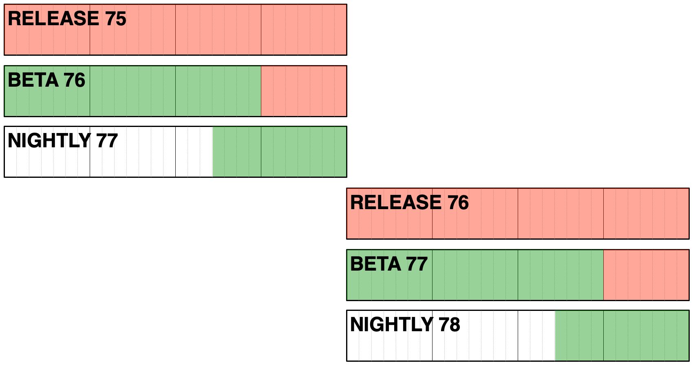
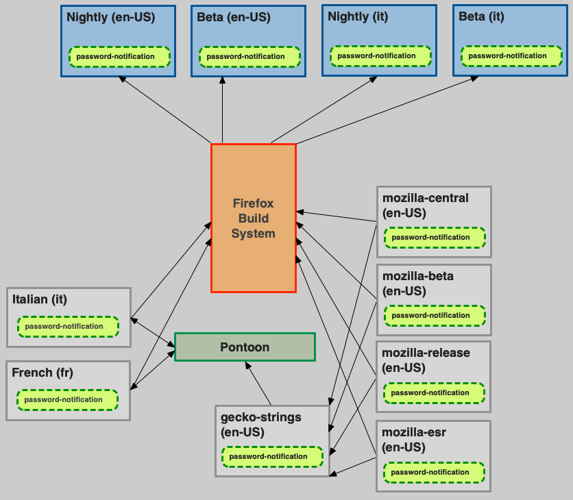
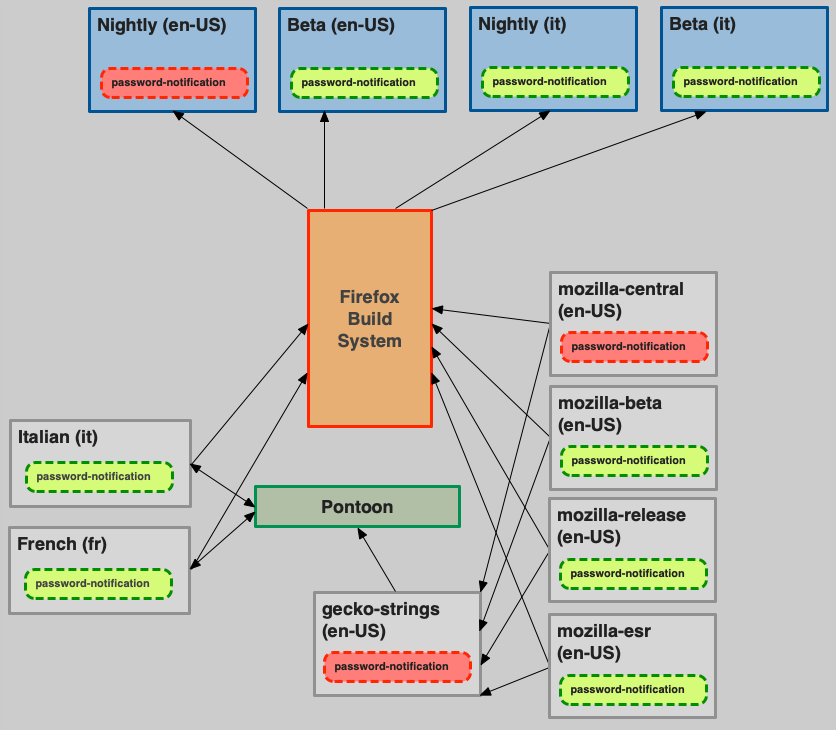
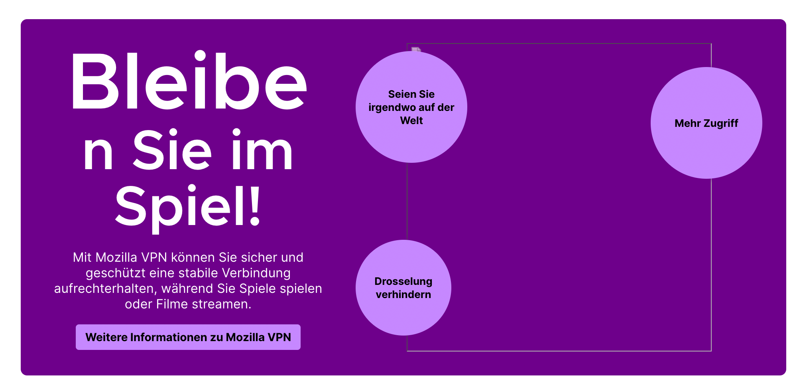
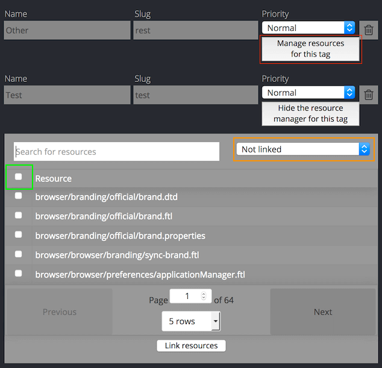

L10n-drivers Documentation
This repository includes several documents describing how to perform internal tasks within the l10n-drivers team at Mozilla.
Topics covered:
- How to review strings for Firefox desktop.
- Manage other projects (Firefox Monitor, VPN Client).
- Perform common and advanced tasks on Pontoon like adding new locale, and creating a new project.
- Other miscellaneous documents related to localization tasks.
How to read these documents
You will need a Unix-like environment (Linux, macOS) to run most of the tools. Across the entire documentation, commands to run in a terminal are described like this:
$ composer update
$ is not part of the command, it just indicates the terminal prompt. The command to type or copy and paste is simply composer update.
Updating the documentation
Please see the README file in our GitHub repository.
L10n and android-l10n
Some documentation specific for common tasks regarding android-l10n and l10n:
Adding a new project to android-l10n
Follow the steps below to add new projects to android-l10n. You will have to coordinate with android-l10n developers and a technical Localization EPM throughout the process.
Setting up the project in source and l10n repositories
Before anything happens, check that the new project is properly localizable by following the directions in this section. Once the new project exists in its corresponding source repo and is properly localizable, it can then be added to the android-l10n repository.
Android developers need to create a TOML file in their code repository and under its corresponding project folder (example for Focus here), as well as as the file containing the source strings in res/values/strings.xml (example with Focus here). The firefox-android repository contains all current android projects.
The TOML file should be pre-populated with a list of locales. When a new project is announced, the mobile PM typically reaches out to localizers on existing communication channels, so they can opt in their locale. If the Android project shares strings with android-components, then you need to first make sure the locale code is already listed under its corresponding TOML file. If not, it will need to be added there as well.
The firefox-android repository currently uses a single workflow (GitHub action) to import strings for all projects from android-l10n. Sync with mobile developers to make sure that the code to import strings for this project has been added.
On the android-l10n repository side, you will need to set up automation to import strings from the code repository. This automation will be responsible for creating all needed files in the repository. You may need to sync up with a technical localization EPM to set this up.
Once automation is in place, it will extract new English strings from the code repository. It should also be possible to invoke automation manually.
Add the project in Pontoon
Once all of this is done and merged, you can now enable the new project in Pontoon. Instructions for adding new projects can be found here.
Updating locales for specific projects
These are instructions in order to update locales to Android mobile products living within the android-l10n project.
Edit the l10n.toml file(s)
All Android products live within the android-l10n repository. Depending on the product that requires a locale to be added or removed, the corresponding l10n.toml file will have to be edited by updating the list of locale codes in it.
The l10n.toml files live in their corresponding project folder, located here for:
Each l10n.toml file typically looks like this:
basepath = "."
locales = [
"an",
"ar",
"as",
"ast",
"az",
...
]
[env]
[[paths]]
reference = "app/src/main/res/values/strings.xml"
l10n = "app/src/main/res/values-{android_locale}/strings.xml"
Identify the locales section, add or update the desired locale code in this list, making sure that the list is in alphabetical order.
Save your edited file, then commit and push from your local clone to the android-l10n repository.
Note that:
- All products share strings with Android Components, so you will also have to edit the Android Components
l10n.tomlfile as well if it’s a brand new locale. - In case of removal of a locale, files need to be manually removed from the repository.
Updating locales in Pontoon
Once the patch has landed, the locale has to be added - or removed - in Pontoon as well. The steps to follow can be found in the existing Pontoon documentation here.
One thing to note is that, once you merge the pull request (PR) adding or removing locales in the l10n repository, automation will send that updated list over to the code repository. However use caution, as the next string quarantine PRs you receive might try to undo your changes (example of Fenix l10n.toml here, and more information about string quarantine PRs here).
You can know the status of l10n imports by checking the list of closed pull requests in firefox-android.
Reviewing strings for a new release of Mozilla Android products
Usually, a new release of our Android products requires updates to strings. Mobile developers will land strings in the code repository throughout the release cycle, and pull requests will be opened by GitHub automation in the android-l10n repository to expose these strings for localization in Pontoon.
The pull requests, tagged as l10n-bot, are then reviewed by an l10n-driver - most often by the PM in charge of the project.
Let’s go over some of the steps needed over time in order to review strings correctly for a new release.
Reviewing the PR
Let's consider Firefox for Android as an example - in fact, these apply to other Android products as well, and they also follow the same train schedule. During the Android l10n cycle, automation will create pull requests, in order to land new strings for the upcoming release.
Let’s consider a past PR here. values/strings.xml is the file containing all needed string updates.
Acceptable changes
The first string change adds attributes: moz:RemovedIn="111" tools:ignore="UnusedResources" to an existing string. You can ignore this kind of changes, as they will not affect localization. They are a reminder for mobile developers that they will be safely able to delete a string once it has finished riding the Nightly/Beta/Release train, and is no longer needed in an upcoming version. More details here.
Changes to comments are irrelevant in terms of string updates, so they’re also OK.
The general review of strings, such as this one, is similar to the review process used in other Mozilla products.
Things to look out for:
- Unclear strings and missing localization comments: the best way to identify them is to translate the strings, only having the string and comment as context (not the entire file, or the associated bug). For example: is the word used both a noun and a verb in English? Is the ID clear enough to give context (e.g.
buttonLabel)? - String changes without new IDs. IDs in XML files are stored in the
nameattribute; for example, the ID of this string isbrowser_menu_customize_home. This type of issue, together with misused characters, is reported by Checks running automatically on pull requests. - Duplicated strings.
- Other general localization issues.
In case of issues, you can comment and CC the developer who introduced the string(s). This can be done directly in the corresponding mozilla-l10n GitHub PR where your review has taken place.
Wrapping up your work
So you’ve reviewed the strings during the cycle, and the PR looks good - this means you can now merge the PR so the strings get exposed in Pontoon.
Pontoon (here for Firefox for Android and here for Focus for Android) should get the new strings automatically after a few minutes, but it’s always a good idea to double check just in case.
One last thing is to not forget to update the l10n completion deadline under Pontoon resources for each product.
Removing projects from android-l10n
Follow the steps below to safely remove projects from android-l10n.
Remove import automation from firefox-android
The firefox-android repository currently uses a single workflow (GitHub action) to import strings for all projects from android-l10n. Sync with mobile developers to make sure that the code to import strings for this project has been removed.
Disable the project in Pontoon
In order to disable a project in Pontoon, log in to admin view of the project (e.g. Firefox for Android, Focus for Android, etc.) and scroll to the bottom of the page. Click the Disabled checkbox on the left and then Save Project.
The project will no longer be shown to localizers and will stop syncing between Pontoon and the GitHub android-l10n repository. This allows safe removal of the project from the repo and avoids any possible conflicts between files.
Remove android-l10n files
- Remove GitHub actions associated to the project.
- If available, remove TOML files associated to the project in the root of the repository (e.g.
focus.tomlforFocus for Android). - Remove the entire project folder.
L10n and Firefox desktop
Some documentation specific for common tasks regarding Firefox desktop and l10n:
- Set up the environment.
- Adding a locale to Pontoon.
- Adding a locale to Nightly builds.
- Adding a locale to Beta and Release builds.
- Set up searchplugins.
- Removing a locale.
- Running Fluent migrations.
- FAQs for Firefox and L10N.
Adding a new locale to Pontoon
- If the locale is not available in Pontoon yet, consult this document for instructions on how to add it.
- File a bug to create a new Mercurial repository in l10n-central using this bug template (replace
%LOCALE_CODE%with the actual locale code). - Push at least one change to the repository, otherwise Pontoon will not pick it up during sync. The safest change is to initialize the
toolkit/chrome/global/intl.propertiesfile with the correct values (example).
Once the repository is available and contains at least one commit, the locale can be added to the Firefox project in Pontoon.
Adding a new locale to Nightly builds
- Prerequisites
- Create a tracking GitHub issue and set up bugs to add the new locale
- Verify content in l10n repository
- Add new locale to build configuration
- Verify product-details configuration
Prerequisites
Locales will be added to Nightly builds only after reaching at least 30% overall completion in Pontoon. For details on the requirements to move to Beta/Release, see this document.
Create a tracking GitHub issue and set up bugs to add the new locale
This GitHub project is used to track locales added to or removed from Firefox. The Queue - WIP column includes all locales currently in Nightly, once they move to Release a new column is added for the specific Firefox version in which they shipped (e.g. Firefox 91).
As a first step, file an issue using the New Locale for Firefox Desktop template. Replace %LOCALE_NAME% (%LOCALE_CODE%) with the locale name and code in the title field, e.g. Lao (lo), and add the issue to the Queue - WIP column in the GitHub project.
Then file a new tracking bug using this bug template. Replace %LOCALE_NAME% with the locale name, e.g. Lao, and %LOCALE_CODE% with the locale code, e.g. lo. Pay attention to update the alias field as well, and CC the locale manager if they already have a Bugzilla account. Once the bug is filed, update the link in the GitHub issue.
Note that the tracking bug is filed under Mozilla Localizations :: Other, as creating the Bugzilla component is a step that will be performed when the locale is ready to move to Beta/Release. If the component for this locale is already available, the bug should to be moved directly there.
To make it easier to track dependencies, also add the bug used to create the l10n-central repository (see Adding a new locale to Pontoon) as a dependency (Depends on: field) of the tracking bug.
Verify content in l10n repository
Before enabling the build, it’s a good idea to perform some basic checks:
- Check
toolkit/global/intl.properties(en-US version) for evident mistakes.
Add new locale to build configuration
First of all make sure that your environment is correctly set up, update your local mozilla-unified clone and make sure it’s on the central bookmark:
$ cd ~/mozilla/mercurial/mozilla-unified
$ hg pull -u
$ hg up central
File a bug using this template, replacing the locale name and code placeholders, and update the link in the GitHub tracking issue.
The first file to modify is browser/locales/all-locales, open it with your text editor of choice (in this example, Visual Studio Code).
$ code browser/locales/all-locales
And add the new locale to the list. With Visual Studio Code, you can open the Command Palette and select Sort Line Ascending to make sure that the list is in alphabetical order.
The second file to modify is browser/locales/l10n.toml. This is the beginning of the file:
# This Source Code Form is subject to the terms of the Mozilla Public
# License, v. 2.0. If a copy of the MPL was not distributed with this
# file, You can obtain one at http://mozilla.org/MPL/2.0/.
basepath = "../.."
locales = [
"ach",
"af",
"an",
"ar",
"as",
...
Identify the locales section, and add the new locale code between double quotes, followed by a comma. As before, you can use the editor to make sure the list is in alphabetical order (make sure to select only the lines with actual locale codes before pressing running the command).
After you’ve finished editing the files, check the status of the repository, and the diff.
$ hg status
M browser/locales/all-locales
M browser/locales/l10n.toml
$ hg diff
diff --git a/browser/locales/all-locales b/browser/locales/all-locales
--- a/browser/locales/all-locales
+++ b/browser/locales/all-locales
@@ -51,17 +51,16 @@ ja
kn
ko
lij
+lo
lt
ltg
lv
diff --git a/browser/locales/l10n.toml b/browser/locales/l10n.toml
--- a/browser/locales/l10n.toml
+++ b/browser/locales/l10n.toml
@@ -59,17 +59,16 @@ locales = [
"kn",
"ko",
"lij",
+ "lo",
"lt",
"ltg",
"lv",
M in hg status indicates that the file has been modified, + in hg diff that the line has been added. Follow the instructions available in this document to create a patch, submit it for review, and land it.
Verify product-details configuration
Once a locale is added to Nightly builds, product-details will pick up automatically the new build. In order for the new build to be listed on mozilla.org, the language name needs to be available in languages.json. If missing:
- Open a pull request against the
productionbranch of product-details (example), and update the GitHub tracking issue accordingly. - The language name needs to use Unicode code points in the format
\uXXXXfor non ASCII characters.
The easiest way to convert the language name from UTF-8 is to use Python's JSON module. For example, to convert Tibetan (བོད་སྐད་):
$ python -c 'import json; print(json.dumps("བོད་སྐད་"))'
"\u0f56\u0f7c\u0f51\u0f0b\u0f66\u0f90\u0f51\u0f0b"
The final entry in product-details would look like this (bo is the locale code for Tibetan):
"bo": {
"English": "Tibetan",
"native": "\u0f56\u0f7c\u0f51\u0f0b\u0f66\u0f90\u0f51\u0f0b"
},
Updates to product-details are pushed to production every time a new Beta or Release build is released. In case of urgency, updates can be triggered manually by Release Engineering.
Adding a new locale to Beta and Release builds
Prerequisites
The majority of the technical work has already been completed when setting up Nightly builds.
There are a few important prerequisites before adding a new locale to Beta and Release.
For the localization community:
- Localization should have reached a high level of completion, especially for user facing parts of the UI:
- All Tags with high priority (4 and 5 stars) should be at 100% (or very close).
- Lower priority Tags should be at least above 30%.
- Localization team has demonstrated a consistent effort, being able to keep up for at least a couple of cycles with the incoming flow of new strings.
- There must be more than one active translator on the project, to ensure that the content has been peer reviewed.
- There is a relevant number of users on the Nightly channel testing the localization. This number varies based on the language, for minority languages 10-20 users is an excellent result. Also, a trend showing growth is important as well.
For the localization PM:
- Builds have been tested on different operating systems without identifying critical issues.
- Searchplugins are set up.
To track this work, you need to file a bug in Firefox::Build Config (like this example), blocking the original tracking bug for the locale (fx-l10n-LOCALE).
Create a Bugzilla component
Before filing a new bug, the localization team needs to provide the translation for %LOCALE_NAME% Localization, as the component description includes both English and translated versions.
Once that information is available:
- File a new bug following this template. Replace
%LOCALE_NAME%with the locale name (e.g.Lao),%LOCALE_CODE%with the locale code (e.g.lo), and%LOCALIZED_DESCRIPTION%with the translation provided by the team. For example, for Lao the whole description will result inLao Localization (ການແປພາສາລາວ). - Once the component is available, update the GitHub tracking issue with the link to this bug, and move all existing bugs from
Otherto this new component.
Set up searchplugins
Check the Set up searchplugins document for detailed instructions on how to set up searchplugins for new locales.
Verify language name
The language name associated to the locale code is displayed in a few places in Firefox interface (language settings for web content, contextual menu for dictionaries). The language name needs to be defined in:
- languageNames.ftl: ID with structure
language-name-LOCALECODE = (name of the language in English). Note that the locale code can only be a 2/3 letter code, locales likeca-valenciaare not valid. - langpack_localeNames.json: add the locale code with the
nativename, addenglishonly if the English name differs from the native name. This list is used to generate language pack names and descriptions. - mozIntl.jsm:
- Add the locale code in the
availableLocaleDisplayNamesconstant,languageset. - Add the localized language name in the
nativeLocaleNamesmap. The localized language name should also be stored in this repository.
- Add the locale code in the
- language.properties: add a value in the form
LOCALECODE.accept = true. This is needed to list the language in the language settings dialog for web content.
This is an example of a bug created to add this information. Don’t forget to update the GitHub tracking issue for the locale with a link to this bug.
Add locale to build configuration
First of all make sure that your environment is correctly set up, update your local mozilla-unified clone and make sure it’s on the central bookmark:
$ cd ~/mozilla/mercurial/mozilla-unified
$ hg pull -u
$ hg up central
This is an example of a recent bug used to track the build changes.
The file to modify is in browser/locales/shipped-locales, open it with your text editor of choice (in this example, Visual Studio Code).
$ code browser/locales/shipped-locales
And add the new locale to the list. With Visual Studio Code, you can open the Command Palette and select Sort Line Ascending to make sure that the list is in alphabetical order.
After you’ve finished editing the file, check the status of the repository, and the diff. Let’s consider for example the task of adding Urdu (ur).
$ hg status
M browser/locales/shipped-locales
$ hg diff
--- a/browser/locales/shipped-locales
+++ b/browser/locales/shipped-locales
@@ -83,14 +84,13 @@ son
te
th
tr
uk
+ur
uz
vi
xh
zh-CN
M in hg status indicates that the file has been modified, + in hg diff that the line has been added. Follow the instructions available in this document to create a patch, submit it for review, and land it.
You also need to set the relnote-firefox flag to ? in the bug, the suggested comment is Suggested for release notes: "Locale added: LANGUAGE_NAME (LOCALE_CODE)".
Update language pack settings on AMO
The language pack for the new locale will be uploaded automatically by release automation on addons.mozilla.org (starting with the Beta version). A few follow-up manual steps are needed:
- The
Mozillaaccount needs to be added as author for the language pack. - The locale needs to be defined in this JavaScript file.
For the first step, an email needs to be sent to AMO administrators (amo-admins(at)mozilla.com).
These steps will make the language pack available in both the Language Tools page and the API used by Firefox to add new languages from preferences.
Close GitHub tracking issue
Once the locale ships to release:
- Create a new column for the Firefox version, e.g.
Firefox 91, in the GitHub project. - Close the tracking issue and move it from
Queue - WIPto this new column.
Set up searchplugins and protocol handlers
Set up searchplugins
Searchplugins configuration has become too complex and it’s constantly evolving, because of that a bug needs to be filed to let the Search Team set up new locales. This section is meant as an overall reference, with link to external documentation.
Given the complexity and external dependencies, it’s become common practice to set up searchplugins at a later phase, when the locale is ready to move from Nightly to Beta, and let Nightly rely on default settings.
Starting with Firefox 68, the XML OpenSearch format was dropped for built-in searchplugins, switching to WebExtensions. Each searchplugin has its own folder, with:
- An icon, which can be either in PNG format (
favicon.png) or ICO (favicon.ico). - A WebExtension manifest (
manifest.json). If the searchplugin supports only one locale, the manifest includes the localized name (repeated twice) and description (leo-ende example).
{
"name": "LEO Eng-Deu",
"description": "Deutsch-Englisch Wörterbuch von LEO",
[...]
"chrome_settings_overrides": {
"search_provider": {
"name": "LEO Eng-Deu",
[...]
}
}
}
- A
_localesfolder if the searchplugins supports multiple locales. In this case, the manifest will only include placeholders for name and description, and they will be localized in a subfolder for the locale itself (Wikipedia example).
"extensionName": {
"message": "Wikipedia (it)"
},
"extensionDescription": {
"message": "Wikipedia, l'enciclopedia libera"
},
Search configuration is stored in Remote Settings. The system, including the schema for search-config.json, is documented in Firefox Documentation - Search Service.
When filing a new bug, make sure to provide the following information:
- The list of searchplugins to use for the locale.
- If a new searchplugin needs to be added: name, description, icon, search parameters. The best way to make sure all information is included is to use existing searchplugins as reference.
Tips for icons and Wikipedia
Icons
These are some useful tips to deal with icons for brand new searchplugins:
- If the image is a PNG, make sure to optimize it before encoding it to
base64(for example using tinypng.com). - You can create an
.icofile starting from separate 16px and 32px PNG icons. Create a 32px image in Gimp, add each icon to a separate layer, and export the file as.ico(make sure to select the option to compress each of the layers). - You can use online services (like this one) to quickly encode an image to
base64. - You can test the image in the browser (copy and paste the data URI in the address bar). You will still have to download it to check that everything looks good, since only one image will be displayed for multilayer
.icofiles, and transparent files are displayed in a misleading way in Firefox preview.
Wikipedia
URLs: Make sure to update all URLs. If the URL for English starts with en.wikipedia., for ur it should start with ur.wikipedia. (check if the domain actually exists).
Search template: There’s one special URL to keep in mind, in English it’s https://en.wikipedia.org/wiki/Special:Search
It’s particular because the last part changes according to the locale, just try replacing the domain first from en. to ur.: https://ur.wikipedia.org/wiki/Special:Search
You’ll notice that it redirects to https://ur.wikipedia.org/wiki/خاص:تلاش and that’s the URL you need to use in the webextension.
You can’t copy the full URL from the address bar since it will encode UTF-8 characters, e.g. https://ur.wikipedia.org/wiki/%D8%AE%D8%A7%D8%B5:%D8%AA%D9%84%D8%A7%D8%B4, so it’s faster to just copy only part of the URL and fix the rest by hand.
Description: You will need localizers to provide the translation for Wikipedia, the Free Encyclopedia.
Name: In the localization file there’s an attribute called extensionName. For English is:
"extensionName": {
"message": "Wikipedia (en)"
},
To get the localized name, visit https://gn.wikipedia.org and press CTRL+U to view the source code of the page. At the beginning you will find a line looking like this:
<link rel="search" type="application/opensearchdescription+xml" href="/w/opensearch_desc.php" title="ویکیپیڈیا (ur)"/>
The Name to use in your localization is ویکیپیڈیا (ur). Copying and pasting RTL languages is particularly tricky.
Set up protocol handlers
Starting with Firefox 98, the configuration for protocol handlers is centralized in mozilla-central. For most new locales, the default configuration should be acceptable.
Removing a locale from Firefox desktop
Removing a locale from Firefox builds should be the last step in a long series of passages. A locale is removed when:
- There’s no visible activity in Pontoon for at least a year.
- The translation level of Firefox is dropping, causing a good portion of the user interface to appear in English.
- Outreach to existing community and locale leaders doesn’t produce results.
- Attempts to find new localizers, via social networks and other tools (e.g. snippets), doesn’t find any potential contributors.
Removing a locale from Nightly
If a locale is only shipping in Nightly, it’s enough to remove the locale from build configuration.
The process is identical to the one use to add a new locale, just removing the locale code from browser/locales/all-locales and browser/locales/l10n.toml.
Locale also needs to be removed from Ship It.
Removing a locale from Beta and Release
Removing a locale already shipping in official builds (Beta, Release) is a much more complex process. These are the steps:
Mercurial repositories and Bugzilla components are not removed when dropping a locale.
Given the number of teams and processes involved, a tracking bug should be filed (example).
Check usage statistics
Existing users for this locale need to be moved to another language, otherwise they would remain forever on an obsolete build. The first step is to determine the current usage statistics on Telemetry using a query similar to this one.
If the locale has a significant userbase (in the hundreds of users), you need to determine the best locale to fall back to. Possible sources of information are:
- Wikipedia page for the language to determine where it’s spoken, and if there are other languages commonly spoken in the area.
- Telemetry (example for France) for the language distribution in these countries.
You also need to verify with Business Development if there are contractual obligations regarding search engines.
For example, Belarusian was recently removed from builds:
- Belarusian is the official language of Belarus. The Wikipedia page also has information about the number of people speaking both Russian and Belarusian in the region.
- Russian is an official language of Belarus.
- Russia has a low percentage of population speaking English.
For these reasons, Russian was selected as the best fall back language for Belarusian. Unfortunately, sources might not always point into the same direction, in that case en-US might be the only viable option.
Redirect existing users to another locale
Once identified the language to fall back to, a bug needs to be filed in Release Engineering::Releases to redirect users via update snippets. An example of such bug is available here.
Remove locale from Beta builds
The process is identical to the one use to add a new locale, just removing the locale code from browser/locales/shipped-locales in Beta. The change will ride the train to Release at the end of the cycle.
Reviewing strings in Firefox desktop
Review landed strings
Starting from Firefox 57, all versions of Firefox desktop ship by localizing a single repository containing the reference English strings, called gecko-strings. It is generated from strings landing in the code repository for each branch (e.g. mozilla-central and comm-central for Nightly, mozilla-beta and comm-beta for Beta, etc.), and it’s exposed to localization tools like Pontoon.
There is a second repository, gecko-strings-quarantine, used as a buffer to avoid exposing poor strings to the larger audience of localizers.
The localizations for all channels can be found in l10n-central, with a single repository for each locale.
The review process consists of three parts:
- Review strings landing in
mozilla-central. Currentlycomm-centraldoesn’t undergo a similar review process. - Review strings landing in
gecko-strings-quarantine. The quarantine repository is updated twice a day via automation in Task Cluster. - Push reviewed strings to
gecko-strings, and start the localization process.
Review strings landing in mozilla-central
You can get the list of changesets touching localized strings in the last 2 days from mozilla-central. Adjust the pushdate part if you want to see more or less days.
There are some unrelated changesets, like en-US dictionary updates, but the majority of landings are relevant and need to be checked for localization issues.
You need to open each changeset, and identify changed files that are relevant for localization (.properties, .dtd, .ini).
Things to look out for:
- Unclear strings and missing localization comments: the best way to identify them is to translate the strings, only having the string and comment as context (not the entire file, or the bug). For example: is the word used both a noun and a verb in English? Is the ID clear enough to give context (e.g.
buttonLabel)? - String changes without new IDs.
- Duplicated strings.
- Localization issues, like misused plural forms, unclear comments, etc.
In case of issues, you have two options:
- Ask sheriffs (via bug or Matrix in #sheriffs) to back out the patch.
- Ask clarifications in the bug, and decide if it’s worth to stop exposing new strings until the issue is fixed.
Review strings landing in gecko-strings-quarantine
The next step is to spot check changes landed in gecko-strings-quarantine. Here are some things to look out for:
- Check if a changeset is removing strings. This should happen only when a string landed in Nightly and was removed during the same cycle, or at the beginning of a release cycle when a group of strings becomes unused in all shipping versions.
IMPORTANT: Patches including Fluent migrations need to be kept in quarantine, and can only be pushed to gecko-strings following the process described in this document.
Run compare-locales against gecko-strings
A good next step to check for issues is to run compare-locales against the gecko-strings repository.
First of all make sure that your environment is correctly set up, and update your local mozilla-unified clone.
compare-locales needs to be installed on your system. You can either install a specific release, or clone the hg repository and install it via pip install -e .. You can check that compare-locales is running correctly by checking its version:
$ compare-locales --version
compare-locales 8.1
Let’s assume that:
- gecko-strings-quarantine is cloned in
~/l10n/gecko-strings-quarantine. - mozilla-unified is cloned in
~/src/mozilla-unified, and you checked out the version corresponding to the converted changeset.
Then run
$ compare-locales --unified --full ~/src/mozilla-unified/browser/locales/l10n.toml ~/l10n gecko-strings-quarantine
When running these, you should see no errors or warnings. When running them against the central revisions, you should see no missing or changed strings, while having obsolete strings is expected. When running against beta or release revisions, expect to have changed strings, but again, no missing strings.
Note: when running compare-locales against a non-existing locale code, use the --full command line argument to get all strings in submodules. In particular for gecko-strings, you need that, otherwise you only get the strings in the browser directory.
Run compare-locales against a localization repository
A good next step to check for issues is to run compare-locales against a localization repository frequently updated (Italian and French are good examples).
- l10n-central/it is cloned in
~/l10n/it.
To run compare-locales against mozilla-unified and Italian you can run:
$ compare-locales --unified ~/src/mozilla-unified/browser/locales/l10n.toml ~/l10n it
To run compare-locales against gecko-strings-quarantine and Italian you can run:
$ compare-locales --unified ~/l10n/gecko-strings-quarantine/_configs/browser.toml ~/l10n it
Both are really long commands, so it’s convenient to create Bash aliases in ~/.bash_profile for them, e.g.
cmp_moz="compare-locales --unified ~/src/mozilla-unified/browser/locales/l10n.toml ~/l10n it"
cmp_mozx="compare-locales --unified ~/l10n/gecko-strings-quarantine/_configs/browser.toml ~/l10n it"
Let’s start with the output of compare-locales against gecko-strings-quarantine: most of the time, it should only report missing strings. There will be obsolete strings only if a string was removed, which is a rare event in cross-channel.
For example, this is the output for a fully localized locale.
$ compare-locales --unified ~/l10n/gecko-strings-quarantine/_configs/browser.toml ~/l10n it
it:
changed: 9914
changed_w: 52351
keys: 1383
unchanged: 883
unchanged_w: 1085
91% of entries changed
Check the results for duplicated strings and errors. For example, if a new error shows up for a missing variable, it’s likely that a string changed without a new ID and introduced new variables.
The output of compare-locales against mozilla-unified is going to contain a lot of noise, since it includes all strings that are obsolete for mozilla-central, but are still needed for other branches. If you’re interested in only seeing missing strings, i.e. strings that need to be added to the l10n repository, you can grep the results by piping the output to egrep '^\s*\+'.
$ compare-locales --unified ~/src/mozilla-unified/browser/locales/l10n.toml ~/l10n it | egrep '^\s*\+'
Push reviewed strings to gecko-strings
If there are no issues in gecko-strings-quarantine and no pending Fluent migrations, the next step is to push changes to gecko-strings and expose content to tools.
Before pushing, this script can be used to compare the tip of the two repositories (it requires a local clone of gecko-strings-quarantine).
One time setup: after you cloned gecko-strings-quarantine on your system, you need to edit its .hg/hgrc file, and add gecko-strings as path. While you only need https for pulling the quarantine repository, you need ssh in order to push updates to gecko-strings.
The content of ~/l10n/gecko-strings-quarantine/.hg/hgrc should be similar to this:
[paths]
default = https://hg.mozilla.org/l10n/gecko-strings-quarantine
gecko-strings = ssh://hg.mozilla.org/l10n/gecko-strings
To push the current default to gecko-strings, from the gecko-strings-quarantine folder simply run:
$ hg push -r default gecko-strings
Instead of default, you can also push a specific changeset, e.g.
$ hg push -r 4c05bc050007 gecko-strings
Fluent migrations
Fluent migrations are used to migrate existing translations from legacy formats (DTD, properties) to Fluent, or existing Fluent messages to new messages or different FTL files.
At the core of each migration there is a Python file, called migration recipe, that instructs the system on how to port existing translations to Fluent. Typically, a patch migrating content to Fluent will:
- Add new Fluent strings or files.
- Remove obsolete strings.
- Include a migration recipe.
Once such patch lands in mozilla-central, it will be converted as part of the cross-channel generation, and pushed to a quarantine repository (gecko-strings-quarantine). At this point, this new content is not visible yet in Pontoon.
The goal of migrations is to port existing translations to the new format without forcing community to retranslate them. For that to happen, migrations need to be performed before the new strings are pushed to the official gecko-strings repository, and become available in Pontoon.
This means that patches including migrations should only be pushed from the quarantine repository to gecko-strings following the steps described in this document.
Running Fluent migrations
This section of the document describes in detail which operations need to be performed in order to run migrations on over 150 Mercurial repositories for Firefox.
Prerequisites
Several access rights are required:
- Write access to l10n-central, i.e. SSH access with
active_scm_l10nrights. It’s possible to check your Access Groups in your profile on people.mozilla.org. - Admin access to Pontoon.
- An account on Heroku with access to Pontoon apps.
In order to run migrations:
- Install the fluent.migrate Python package.
- Clone all l10n-central repositories.
- Clone gecko-strings-quarantine and gecko-strings.
A set of scripts to automate cloning and updating of the l10n-central repositories is available here.
Ensure there are no blocking issues in gecko-strings-quarantine
As part of migrations, content needs to be pushed from the quarantine repository to gecko-strings. Since content can’t be pushed selectively, any pending issue needs to be solved before starting the process (eventually backing out problematic changes). For more information about the review process, see this document.
Stop sync in Pontoon
Before starting the migration process, sync needs to be suspended for Firefox from the admin panel by selecting the checkbox SYNC DISABLED at the bottom of the page, then clicking SAVE PROJECT.
This is needed for several reasons:
- It removes the chance of conflicts in the l10n repository between the running migration and Pontoon committing changes for other projects.
- The migrated strings need to be added in the same cycle as the new strings for the source language (
en-US). If they’re added before, Pontoon will ignore them, creating a misalignment between internal database and l10n repositories. If they’re added after, these strings will be displayed as missing in Pontoon, and some locales might try to translate them while it’s not needed.
The last step here is to make sure that the current sync process has completed:
- Check the Sync Logs page, click on the last one, and make sure that there are no projects with
---in theDURATIONfield.
Test the migrations locally
A series of tools and helpers to run migrations is available in this repository:
- Clone the repository locally and follow the instructions available in the README to set the configuration file.
- Add the new migration recipes in the
recipesfolder. The script will look for any Python file starting withbug_in that folder, so it’s possible to run multiple migrations in one pass. More information about the folder’s structure are available in the repository’s README.
At this point, while each migration has been tested as part of the review before landing, it’s always good to run the migration against one locale, e.g. it:
- Update the locale’s repository, check the results of
compare-locales. Assuming l10n repositories are cloned in~/migrations/locales, and the quarantine repository in~/migrations/gecko-strings-quarantine, the command to run iscompare-locales ~/migrations/gecko-strings-quarantine/_configs/browser.toml ~/migrations/locales it. Save the output in order to compare it with the results after the migration. - Run the migration, without pushing, only for
it:./scripts/migrate it wet-run. Then run compare-locales again, and check if the results are as expected: migrated strings should not appear as missing anymore, and there should be no errors. - If everything looks as expected, re-run the script adding the push option
./scripts/migrate it wet-run push.
Push updates to gecko-strings
Before pushing updates to the official gecko-strings repository, make sure that:
- The new strings and migrations are available in the quarantine repository.
- There are no pending issues that prevent the current content to be exposed in Pontoon.
- The migration has been tested locally and works as expected.
Once the new strings are pushed to gecko-strings, there’s no easy way to roll back, and the procedure needs to be completed before re-enabling sync in Pontoon. The alternative is forcing all locales to retranslate this content, and losing the entire benefit of migrations.
Pontoon relies on a different repository, that is generated every 20 minutes based on the content of gecko-strings. That’s why it’s useful to run this update before starting the actual migrations.
Run migrations
To run the migration on all repositories, use ./scripts/migrate wet-run push in the same environment used for testing. For each repository, this will:
- Pull changes.
- Run the migration and commit changes.
- Push changes to the remote.
The duration of this step depends on the number of migrations and the speed of the Internet connection, but it should take about 20-30 minutes.
While migrations run, it’s important to look out for errors in the console, even if the standard output is quite noisy:
- Python errors with a stack trace are unlikely at this stage of the development, since it means that the code encountered a scenario that it’s unable to manage. If something is broken in the
fluent.migratepackage, or there are issues with Python dependencies, the migration should stop at the very beginning. - For Mercurial, one potential error scenario is a push that would create a new head in the remote repository (
abort: push creates new remote head, followed by a changeset ID). The script automatically pulls from the remote repository before running migrations, and Pontoon’s sync is disabled, so that shouldn’t happen, unless a previous migration failed to push to remote and left unsynced local commits. In this case, the easiest solution is to clone the repository for this locale from scratch, and run the migration only for that specific locale.
Re-enable Sync in Pontoon
Once the actual migration is complete, the next step is to re-enable sync in Pontoon. Before starting, make sure that the Pontoon repository has a commit with the new strings.
- Access the admin panel for Firefox, click the
SYNCbutton at the bottom, then deselectSYNC DISABLEDand clickSAVE PROJECT. - Clicking the
SYNCbutton will spawn a new sync process just for Firefox. Check the Sync Logs page to see when it’s finished. Depending on the amount of changes, this can require from 15 to over 30 minutes. It’s also possible to monitor the status in Papertrail, accessible from the Resources page in Heroku, and filter the log using the stringapp/worker.
Build system details for Firefox desktop
Overview
Thanks to cross-channel, we ship all versions of Firefox from a single localization repository, but each channel uses a different snapshot in time of that repository.
A job, called l10n-bumper, runs on Taskcluster every hour, and stores information on the l10n changesets to use for each build in a file called l10n-changesets.json:
- For Nightly (
mozilla-central), l10n-changesets.json always uses the revisiondefault, and it’s only updated when changing the locales available in the build. - Beta builds (
mozilla-beta) still use the tip of the l10n repository, but the actual hash is stored in l10n-changesets.json instead ofdefault. - Before Release Candidate week, the
l10n-bumperis manually stopped onmozilla-beta. Since the configuration change lands only onmozilla-beta, thel10n-bumperwill automatically restart at the beginning of the next cycle, when the standard configuration is uplifted frommozilla-central. - When the Beta code is merged to Release, l10n-changesets.json moves together with the rest of the code to
mozilla-release. That means that Release builds will use the same changesets as the last beta with the same version number, and any further change requires code uplifts.
Timeline and deadlines
This is how Beta looks like in a 4 weeks release cycle, with relevant milestones.

On Monday, 8 days before the release, the l10n-bumper will stop updating l10n-changesets.json on mozilla-beta.
Once the code merges from Beta to Release, any changeset update would require a manual uplift to mozilla-release and a new Release Candidate (RC) build.

Updating release
When the code moves from mozilla-beta to mozilla-release, l10n-changesets.json is frozen, as l10n-bumper is not configured to run against the release branch.
In case of severe issues affecting one or more locales, it’s still possible to manually update the shipping changesets. A patch needs to be provided for l10n-changesets.json in mozilla-release branch and approved for uplift by Release Drivers (see for example this bug and associated patch). Note that a dot release is needed in order to ship the updated version to users. This script can be used to validate the updated JSON.
The same process applies to ESR versions, as long as the associated esr repository is included in the current version of cross-channel.
Firefox L10N FAQs
This document includes a series of frequently asked questions regarding Firefox and localization, mostly targeted at developers, but useful for product managers and engineering program managers as well.
- General
- Builds and distribution
- Schedule and release cycle
- Development
- Where can I find guidelines for developers?
- How can I get my strings localized?
- Where can I find the localized strings?
- Can I land content without exposing it for localization?
- Can I get content translated only in selected languages?
- Can I restore an old string?
- Should I remove obsolete or unused strings?
- How can I test a different locale?
- Translation completion and community
- Is my feature going to be localized in language X before launch?
- How do I communicate with localizers about my feature or patch?
- I see pending suggestions in Pontoon, how can I get them approved?
- How can I check if my feature is localized?
- How can I see all translations available for a specific string?
General
Who can I contact if I have more questions?
A Program Manager (L10N PM) is assigned to any Mozilla project that is localized through community. You can find this information in Pontoon for any project in the header section, and more information about the localization team is available in the Confluence page dedicated to Localization (available to Mozilla staff only).
Should I enable my feature only for English, or ship it in English for everyone?
Shipping a feature only for en-US is not great, since it creates confusion for users: features are described in SUMO articles or publicized in blog posts, but not available for more than 60% of Firefox user base.
Shipping a feature in English for everyone is not a good option either: as an English speaker, imagine starting your browser and finding a window in Chinese.
In the end, both options are a product decision, and the localization team can help assess the impact on users and community. How to ship a feature only to en-US users depends on several factors (technology, information available at the time the feature is loaded, etc.), and the best approach is to get in touch with the engineering part of the Localization team (aka “tech team”).
Builds and distribution
How can users get localized builds?
Unlike mobile products, where we ship multilingual builds by default and users can simply switch language from the app or OS settings (e.g. for iOS), for Firefox there are several ways to get a localized build, independently from the platform:
- From mozilla.org it’s possible to download a localized build that includes a specific language (e.g. French) — for all versions of Firefox (Nightly, Developer Edition, Beta, Release, ESR). These are frequently referenced to as repacks, because this type of build is generated by unpacking the en-US build, injecting localized strings, and repackaging everything in a shippable format for each platform. For some locales, these builds also include a dictionary for spell checking, depending on the availability of a dictionary with suitable license.
- On Beta, Release, and ESR users can also switch Firefox to another language from Settings, e.g. they download a build in English and then switch to French. Under the hood, this downloads and installs a language pack from addons.mozilla.org (AMO) for the requested language, and also installs dictionaries if they’re available for that locale.
- Language packs are a specific type of extension that only includes localized strings, no additional code. They’re generated by the build system and uploaded to AMO via automation. Note that only official Mozilla language packs can be hosted on AMO.
- The list of dictionaries is manually curated and stored in remote-settings.
- On Release and ESR, users can also manually download language packs from AMO and set the preferred locale manually in
about:config.
While it’s important to note that there’s no real multilingual package for Firefox — builds always include one locale, and more can be added using language packs — there are also platform specific distribution systems that work around this limit:
- MSIX (Windows)
- Flatpak (Linux)
- Snap (Ubuntu Linux)
All available language packs are distributed as part of the package, but only a subset is installed based on the OS locale settings. All of these systems then rely on the the preference intl.locale.requested set to an empty string to automatically match the OS language.
These approaches allow to ship one package and support multiple languages, but there are known limitations (e.g. dictionaries are not included, and language packs cannot translate some parts of the UI).
Schedule and release cycle
I landed strings in mozilla-central, when are they going to be localized?
New string changes are exported twice a day from mozilla-central into a repository called gecko-strings-quarantine, a unified repository that includes strings for all shipping versions of Firefox (nightly, beta, release). This repository is used as a buffer to avoid exposing potential issues to all locales working on Firefox.
Typically once or twice a week, the content of the quarantine repository is pushed to the official repository, called gecko-strings, used by Pontoon as source reference. At this point, strings can be localized by community.
Can I uplift a patch to Beta or Release?
While Nightly is always open for new strings, Beta and Release are string frozen, meaning that patches with new strings are normally not allowed to land.
Uplifts need to be evaluated case by case, but in general they should be avoided in the context of a 4-weeks release cycle. Possible alternatives are uplifting ad-hoc patches without string changes, or exposing the feature/change only to English users.
One more thing to consider is the timing of the uplift. The second part of the Beta cycle is completely frozen, meaning that we can’t take any updates to localization and ship it in that version. Anything uplifted close to the deadline, or after, will ship untranslated. For more details about the Beta timeline for l10n, see the Build system document.
I need to add new strings for version X: when is the deadline?
If version X is in Nightly, i.e. currently developed in mozilla-central, there is time to land until merge day, when the code moves from mozilla-central to mozilla-beta. Technically, the string freeze date is on the Friday before merge day, to account for possible back-outs, l10n reviews needed, etc.
The sooner you land content in mozilla-central, the higher will be the chances that the content will be localized in several languages before reaching release.
A webapp is available here with all the deadlines, including string freeze start, for current and future versions of Firefox (use the « and » near the title to change version).
Development
Where can I find guidelines for developers?
A document including plenty of best practices is available here, while specific information around Fluent is available in this document. In case of doubts, reach out to the Firefox L10N PM or localization team for clarifications.
How can I get my strings localized?
Strings need to be added to localization files in known locations within the mozilla-central tree. For all the technical details about these paths and the supported formats, see this document.
Once strings land in mozilla-central, they will be exposed for localization in Pontoon within a few days.
Where can I find the localized strings?
All shipping versions of Firefox are built from a single Mercurial repository for each locale (l10n-central). Repositories are available here.
Can I land content without exposing it for localization?
If your content is not stable, or you want to iterate quickly over it before exposing it for localization, it’s possible to land a string file outside of the known paths, and access it from the code.
For Fluent, you can follow examples like this patch, where the FTL file is stored outside of the localizable paths, and loaded as “preview”.
If you follow this approach, make sure to have a bug on file — or an explicit task in your roadmap — to expose this file to localization with sufficient lead time for translation before the targeted release.
Can I get content translated only in selected languages?
No, the existing infrastructure only allows to expose strings to all locales. If a feature is exposed for localization, it will get localized in all supported languages.
Can I restore an old string?
It’s always possible to restore an old string that was removed from code, as long as the text remains the same, and the string is used exactly in the same context.
It might also be possible to uplift the patch if the string is still available in the gecko-string repository. gecko-strings is a repository with a superset of strings from all supported versions of Firefox: nightly, beta, release, ESR.
Consider this example:
- The original string landed in Firefox 85, and was removed later in Firefox 92.
- The list of support versions in cross-channel includes: ESR91, 92, 93, 94.
- The string is restored in Firefox 94.
The string will still be available in gecko-strings until ESR91 becomes unsupported, since the string was removed after that release (in Firefox 92). This patch could be uplifted without creating any issue to localization (it would be a no-op).
If the string is not available anymore, this is effectively a new string, and must be treated as such.
Should I remove obsolete or unused strings?
Strings that are unused, or become obsolete as a consequence of code changes, should always be removed from the en-US files. Tools like Pontoon will remove them from localized files once these strings are not used in any supported version of Firefox (see the previous question for more details).
It might seem useful to keep them around — we could use them again later and it would spare localizers some time — but there’s no guarantee that the new context and usage will be exactly the same. Removing them also prevents new locales, or locales that fell behind over time, from working on translations that will never be used.
How can I test a different locale?
The answer depends on the version you want to test.
Official builds:
- On Beta and Release, you can switch the UI language directly from Firefox settings. You can also download localized builds from mozilla.org.
- On Nightly and Developer Edition this feature is disabled, since language packs are not reliable. You can still manually install language packs for the version you’re using directly from FTP (Nightly, DevEdition changing the build in the URL), then enable the language switcher by setting
intl.multilingual.enabledtoTruein about:config.
Local builds:
- If you’re using Fluent, you can test your feature for localizability issues, like layout constraints or hardcoded content, using pseudolocales.
- If you’re building locally, you can try installing the latest language pack for Nightly (it might not work as expected if you’re adding new strings, or break after an update). Language packs are stored on FTP inside the
linux-x86_64/xpi/folder for daily builds, or latest-mozilla-central-l10n. - You can build directly in a different locale (no support for artifact builds).
- It’s possible to add specific l10n repacks to a Try Server push. For example, to add French: select Add new Jobs, then select the
frlocale inL10n-Rpk. Once the job is completed, builds will be available as artifacts underL10n (BsX), whereXchanges depending on the locale.
Translation completion and community
Is my feature going to be localized in language X before launch?
Each community will localize new content at different times: some locales will have a complete localization within hours, while others might take weeks or months. Our continuous localization infrastructure allows us to release Firefox with incomplete translations falling back on a backup locale in case of missing strings or errors.
Given that localization is managed by community volunteers, there is no SLA or guarantee that a product will be completely localized before launch. For more information, see this page on Confluence (available to Mozilla staff only).
How do I communicate with localizers about my feature or patch?
If there is some specific information that you want to convey to localizers, like testing instructions or particular issues to look out for, get in touch with the L10N PM for Firefox. They will help you identify the best channel and way to relay this information.
I see pending suggestions in Pontoon, how can I get them approved?
Standard users in Pontoon can only provide suggestions: these translations are visible in Pontoon, but don’t get committed to repositories or ship in products.
For each locale there are translators and managers that can review these suggestions, and eventually approve them. The timing depends on each locale’s workflow.
How can I check if my feature is localized?
There’s no easy way to see this information in Pontoon. If all the strings are stored in a single file, only used for that feature, or you have a detailed list of all the strings used, it’s possible to extract this data manually. Get in touch with the Firefox L10N PM for more information.
How can I see all translations available for a specific string?
Pontoon doesn’t allow to see all translations for a specific string, but you can use Transvision for it:
- Search for the string (by ID or text), making sure that
Firefoxis selected as repository. - In the results, click on the green
all localestag close a string to see all available translations. Results are also available via API (linked at the bottom of the page).
Localization
- Making changes to existing strings
- Localization best practices for developers
- Globalization best practices for product managers
Making changes to existing strings
String identifiers
In most localization formats, a translation unit consists of a unique identifier (ID, often string ID or message ID) associated to a segment of text. For example, in the following Fluent snippet, the text Cancel is stored in a message with ID cancel-button.
cancel-button = Cancel
The same concept applies to legacy formats like DTD or properties, or XML in Android.
# DTD
<!ENTITY cancelButton "Cancel">
# Android XML
<string name="cancel_button">Cancel</string>
General guidelines
These are the general guidelines to follow when updating existing strings already exposed for localization:
- If you are changing a string such that its meaning has changed, you must update the string ID.
- In case of Fluent, you need to update the string ID also when the morphology of the message changes, i.e. attributes are added or removed.
- If your changes are relevant only for English — for example, to correct a typographical error or to make capitalization consistent — then there is generally no need to update the string ID.
There is a gray area between needing a new ID or not. In some cases, it will be necessary to look at all the existing translations to determine if a new ID would be beneficial. You should always reach out to the l10n team in case of doubt.
As for which new ID to use, versioning – adding a number, e.g. cancel-button2 – should be only used as a last resource when better IDs are not available.
When updating IDs, make sure to also update references to the old ID in both existing code and comments.
Why is it necessary to use new IDs?
This is very specific to how localization works at Mozilla, and mostly depends on two key elements:
- String IDs (and not their values) are used to identify strings throughout the entire localization toolchain.
- Translations stored in Version Control Systems – Mercurial or GitHub depending on the project – are treated as the source of truth.
Changing the message ID will invalidate existing translations, the new message will be reported as missing (new) in all tools, and localizers will have to retranslate it. This is the only reliable method to ensure that localizers update existing localizations, and run-time stops using obsolete translations.
Generic localized product
Let’s consider the simplest scenario for a localized product, using a single repository for storing both the source locale (en-US) and other localizations.
password-notification = Please enter your master password
This message needs to be updated to Please enter your primary password. This is the type of change that we want to be reflected in all locales, so we create a new string, with a different ID:
primary-password-notification = Please enter your primary password
The localization toolchain considers this a brand new string and notifies localizers that it requires translation. Pontoon leverages the prior translation, so that the localizer only has to translate the diff (e.g., “Please enter your password” would be leveraged, the localizer would only need to add “primary”). The downside, however, is that it requires more work for developers to update references in code.

The picture above shows a snapshot of the situation before the string change:
- Both source strings (en-US) and localizations are stored in a single repository. For simplicity, only two locales are displayed (French and Italian).
- The string with its translations is also stored in our internal localization tool, Pontoon.
- The build system is using the content stored in the localization repository to build localized versions of the product. At run-time, code is going to query the string with ID
password-notification, and show the available translation or fall back to English if that’s missing (the fallback logic and its complexity heavily depends on the product).
Note that this is still a simplification of a real-life product:
- The
en-UScontent would be exported periodically from the product’s code repository. - Both localization and code repositories would be used to build and deploy.
- Pontoon only reads the source locale, but can both read and write localizations.
What happens if we change the message without using a new string ID?
password-notification = Please enter your primary password

At this point:
- The en-US product will start using the new message (in red) right away.
- Pontoon will read the updated message, but won’t invalidate existing translations (in green) or notify localizers. Remember that there are cases, e.g. fixing typos, where this is a desired behavior.
- The l10n repository will keep storing older translations (in green), although they are likely obsolete at this point.
- Both run-time and build system won’t know anything about the different versions of this string, they won’t be able to differentiate values that were updated from those that are obsolete and use that information for the fallback logic.
As explained before, at Mozilla the VCS is the source of truth, and it can be accessed directly by localizers, or by tools other than Pontoon. As a consequence, as you can see from the picture, the sync between Pontoon and l10n repositories needs to be bidirectional: new translations are written by Pontoon in the l10n repository, but Pontoon also reads changes made to the repository. The latter is quite common in Firefox, for example when we run Fluent migrations.
In this scenario, the only way to ensure that obsolete translations are ignored by the entire toolchain is to change string IDs. The alternative would be gating access to the repository, allowing only translation via Pontoon, and automatically remove all obsolete translations as soon as the source locale changes. It’s worth noting that this approach might prevent us from shipping localization updates for a previous version of the product (in the example, one where master password is still in use).
Firefox
Things become a lot more complicated for Firefox:
- Each localization is stored in a separate Mercurial repository.
- The
en-USlocale is stored in the code repository (e.g.mozilla-central). That locale is used by the build system to build the US English version of Firefox, but it’s not used as source by the localization toolchain. In fact, in order to ship all versions of Firefox (Nightly, Beta, Developer Edition, Release, ESR) from a single l10n repository, we rely on a special cross-channel repository calledgecko-strings, which includes all strings for all shipping versions of Firefox.
This is the scenario before the string change. Once again, although it already looks very busy, it’s a simplified high level view of the actual system.

And this is what happens if a string is changed without new ID:

- The string is changed in
mozilla-central, and the en-US Nightly build will start using it. This change is reflected ingecko-strings, but doesn’t impact other builds (e.g. beta), because that’s not used by the build system. - As for the generic product, Pontoon reads the updated change, but doesn’t notify localizers or invalidate existing translations.
In this scenario, simply removing existing translations from VCS isn’t possible, because we still need them to ship in older builds.
Let’s take it a step further, and assume that we can detect the change, notify localizers in Pontoon, and Italian updates its translation (in purple).

As you can see, this would result in shipping the updated version of the string in all builds, including ones where master password is still used.
That’s not how it work in other companies or products
True, Mozilla’s approach to localization is unique, as much as our Mission to ensure openness. Most companies, for example, can treat their internal localization tool as source of truth, gate access, and use VCS only as a write-only storage. In that case, they can directly remove obsolete translations from VCS, or keep track safely of strings that need to be reviewed following changes to the source language. They also can enforce schedules and timelines, since localization is managed by either staff or vendors, while at Mozilla is managed by a community of volunteers.
Adopting this type of approach at Mozilla would require a drastic change of paradigm, including closing down access to repositories, and a significant investment in updating the existing toolchain.
Localization best practices for developers
- Note on localizers
- Localization files
- Land good quality strings
- Make strings properly localizable
- Create localizable UI
- Test localizability
This document provides best practices for developers to create localizable code, and describes how to avoid some common localizability mistakes. Some additional guidelines specific for Fluent in Firefox are also available in this page, and there is a collection of FAQs specific for Firefox localization.
Specific channels dedicated to localization are available on Matrix, in case you have more questions:
- #l10n-community is used by localizers, and it’s a good place to ask for questions about specific languages.
- #l10n-dev can be used for more technical questions.
- #i18n is the channel of the Internationalization (i18n) team.
Note on localizers
Mozilla localizers are volunteers with very diverse technical skills and backgrounds: some of them rely exclusively on translation tools and have a linguistic education, others prefer to work directly with text editors and don’t have problems interacting with version control systems (VCS) or reading code.
It’s important to consider this when adding strings, and especially localization comments for strings that contain references or technical details.
Localization files
String identifiers (IDs)
In most localization formats, a translation unit consists of a unique identifier (ID, often string ID or message ID) associated to a segment of text. The ID chosen for your string, regardless of the file format, should always be descriptive of the message and its role in the interface (button label, title, etc.). Using specific IDs also will discourage other developers from reusing strings in different contexts.
In most case, when updating an existing string already exposed for localization, a new string ID is necessary (for more details, see this document):
- If you are changing a string such that its meaning has changed, you must update the string ID.
- In case of Fluent, you need to update the string ID also when the morphology of the message changes, i.e. attributes are added or removed.
- If your changes are relevant only for English — for example, to correct a typographical error or to make capitalization consistent — then there is generally no need to update the string ID.
There is a gray area between needing a new ID or not. In some cases, it will be necessary to look at all the existing translations to determine if a new ID would be beneficial. You should always reach out to the l10n team in case of doubt.
If a new ID is needed, adding a progressive number to the existing ID should always be used as a last resort. For example, suppose this string needs to be changed from Event to Add New Event:
new-event-header = Event
add-new-event-header is definitely a better choice for the new string than new-event-header1.
If a string is tied to an accesskey or a tooltip, use string IDs that highlight this relation:
neweventbtn.label = Add event
neweventbtn.accesskey = A
neweventbtn.tooltip = Add a new event
If you’re adding new strings, check that you’re not duplicating an existing ID. Depending on the parser logic, one of these two translations will be ignored. For some products, e.g. Firefox in mozilla-central, this check might be performed by automation.
Add localization notes
Localizers often have visibility over one string at a time, without the context of source code. For this reason, it is important to add comments to the localizable files themselves. These comments are generally referred to as localization notes.
Don’t forget to add a localization note when:
- Part of the string is not supposed to be localized (for example, the name of an HTML attribute in a warning).
- String includes variables: always explain what will be the value of these variables at run-time.
- English could be ambiguous. For example:
bookmarkcan be a noun or a verb. Using meaningful IDs can also help in these cases. - Strings are used in a specific context. For example accessibility (a11y) strings: in this case space is less important than clarity, since these strings are not displayed in the UI but used by tools like screen readers.
- The string contains an adjective, but the noun it refers to is not part of the string. Most languages need to decline adjectives based on number and gender.
There is an established format for localization comments: it’s important to follow the format as closely as possible, since there are a number of automated tools that parse these comments for easier access and use by localizers.
Fluent files
Fluent supports several types of comments (file, section, individual message).
### File comment
## Section comment
# Standalone comment
# Message comment
my-message = Example
Strings with variables should have a comment documenting the type of each variable:
# This string is used on a new line below the add-on name
# Variables:
# $name (String) - Add-on author name
cfr-doorhanger-extension-author = by { $name }
Properties files
# LOCALIZATION NOTE(privacy-text): %S will be replaced at run-time by an
# active link. the string “privacy-link” will be used as text for this link.
privacy-text = By proceeding you agree to the %S.
privacy-link = Privacy Terms
File-wide comments should use the same format, they should be at the top of the file (after the license header) and just drop the (entity name/key) reference.
DTD files
<!-- LOCALIZATION NOTE: The accessibleLabel is a spoken label that should not
include the word "toolbar" or such, because screen readers already know that
this container is a toolbar. This avoids double-speaking. -->
<!ENTITY navbar.accessibleLabel "Navigation">
JSON (webextension)
"disableDataCollection": {
"message": "Disable data collection",
"description": "The label on the toggle that DISABLES sending interaction data to Mozilla."
}
XML (Android)
<!-- The same as 'shortcut_erase_short_label' but more descriptive. The launcher shows this
instead of the short title when it has enough space. Android recommends a maximum length
of 25 characters.
%1$s will be replaced by the app name (e.g. Firefox Focus) -->
<string name="shortcut_erase_and_open_long_label">Erase and open %1$s</string>
XLIFF (iOS, qt)
<trans-unit id="vpn.controller.active">
<source>Secure and private</source>
<note>This refers to the user’s internet connection.</note>
</trans-unit>
Land good quality strings
Try not to land temporary strings. If you already know that your strings are temporary, they shouldn’t be exposed to the localization process. This would waste everybody’s time and create unnecessary frustration: localizers have to translate strings that are destined to change, developers will need to use new IDs later to update them.
In case of Fluent and Firefox, it’s possible to save these strings in a file that is not exposed to localization (example). This has two benefits:
- It won’t be necessary to change the code to make it localizable, e.g. to remove hard-coded strings.
- When the content is ready, the file can simply be moved and exposed to the localization toolchain.
If you’re reviewing a patch, check also strings (and comments) for grammar errors, capitalization or inconsistencies. Each product should have its own set of copy rules. For example, in Firefox typographical quotes (’“”) should be used instead of straight ASCII quotes ('"), and there are automated tests enforcing that.
If you have any doubts about the quality of strings, ask the Content Team to do a copy review of this text. Ideally, all strings landing in code should originate from approved UX wireframes, and copy review should be part of the initial stage of creating these wireframes.
Make strings properly localizable
Create flexible content
You need to account for different grammar structures in different locales, and add switching mechanisms to present them appropriately. You shouldn’t make assumptions as to what those structures will be. Instead, let locales/localizers decide. When in doubt, ask the localizers.
Date, time and unit formatting
For example, you shouldn’t hard code date formats into applications:
%A, %b %e
// resulting in Wednesday, May 20
This is fine in English, but in Italian it results in “Mercoledì, Mag 20”, which sounds unnatural. Every time you use this kind of structure, you should have a localizable string behind it, and let localizers decide the best order for their language.
Another example is localizing percentages or units. Some locales use a space between the number and the % symbol, some don’t, and some use a non-breaking space.
Fluent provides built-in functions (DATETIME() and NUMBER()) to deal flexibly with both date and number formatting.
Splitting and composing sentences
Splitting sentences into several keys often inadvertently presumes a grammar, a sentence structure, and such composite strings are unnecessarily difficult to translate.
For example, in English all the following begin with the same clause:
The URL of this feed is invalidThe URL of this feed cannot be reachedThe URL of this feed cannot be parsed
It might be tempting to save time by presenting this as The URL of this feed %S and then replace the variable at run-time. However, linguistically these are different types of sentences and will be handled differently in other languages. This is usually not a case of translator choice but obligatory in the language. For example, in Gaelic these sentences must be translated as:
Tha URL an inbhir seo mì-dhligheachCha ruig sinn URL an inbhir seoCha ghabh URL an inbhir seo a pharsadh
Unless there are significant savings of translation volume involved, it is usually easier and quicker for translators to handle these as fixed strings rather than composed strings, especially considering the time needed for locating, checking and potentially fixing composed strings.
Word order
If a string contains a variable, always add a placeholder to the string to allow the localizer to change the word order if necessary. For example, it might seem fine in English to present the string [username] says: to localizers simply as says: but this will cause issues in many other languages, as the agent of an action often will not come in front of the verb. For example in Irish/Gaelic the correct order is be [username] at saying:. If a placeholder is present, this can be correctly localized as Tá %s ag rádh:, but that’s impossible without it.
Similarly, if the UI string is Flash Version, do not simply present the translator with Version for translation. Present the whole string or, if there is a significant need for a placeholder, use a placeholder. The word Version may have to go before or after Flash and one or both may need to be inflected.
Case and inflections
Many languages have features like noun classes (i.e. nouns belonging to different categories and treated differently by the grammar), case and inflections (changes are made to a word to indicate differences in meaning or use) and so on. In modern English, such features are rare and are mainly restricted to plural -s and verb forms (e.g. go > went is a form of inflection).
Here are a few examples from other languages:
- Gender in German: nouns can be either masculine, feminine or neuter. The most obvious impact is that the definite article, which in English is always
the, can either beder, dieordas. To complicate matters, if the grammatical context changes, the article will change:Der Text(“the text”) changes toWollen Sie den Text speichern?(“Do you want to save the text?”), because text is nominative (subject) in the first sentence, and accusative (direct object) in the second. - Suffixes in Basque: where English tends to use expressions such as “to the” or “from the”, Basque adds an ending to a word to express the same concept. For example
From the menuin Basque isMenutik(suffix-tik) andTo the printersisInprimagailuei(suffix-ei).
Using placeholders for something like “the text” or “the file” works well in English but is likely to cause problems for localizers if the placeholders cannot be inflected.
Use proper plural forms
Firefox supports proper plural forms in Fluent and Properties (not DTDs). As a native English speaker, you might find it natural to use two strings to solve plurals:
delete-cookie = Delete cookie
delete-cookies = Delete cookies
But plural forms are a lot more complex in other languages, requiring up to six different forms (see CLDR page).
Using Fluent, this string would look like this:
delete-cookies = { $count ->
[one] Delete cookie
*[other] Delete cookies
}
This also allows localizers to expose the number of items, in case it’s necessary:
delete-cookies = { $count ->
[one] Delete one cookie
*[other] Delete { $count } cookies
}
Or to target a specific number (value) instead of a plural category. For example, the category one in French covers also 0, unlike English and most western languages where 0 is covered by other (like 2).
delete-cookies = { $count ->
[1] Delete this cookie
*[other] Delete { $count } cookies
}
In Properties (forms are separated with a semicolon, see code):
# LOCALIZATION NOTE (delete-cookies): Semi-colon list of plural forms.
# See: http://developer.mozilla.org/en/docs/Localization_and_Plurals
# #1 is the number of cookies to delete
# example:
delete-cookies = Delete #1 cookie;Delete #1 cookies
Important: always include the localization note with this format if you use a plural form in Firefox. This comment is used by tools to identify strings with plural forms.
For some formats, plural forms are not supported, for a limitation in either the format itself (DTD, JSON) or in our toolchain (XLIFF, XML). In these cases, you should try to use plural neuter forms: instead of %S files were copied, use Copied files: %S.
Use ordered variables in string with multiple variables
Consider this string:
generalSiteIdentity = This website is owned by %S. This has been verified by %S.
First thing: always add a localization comment explaining what these variables mean, even if it seems obvious. Using multiple %S gives the impression that the order of variables is fixed, while it actually isn’t.
# LOCALIZATION NOTE(generalSiteIdentity): %1$S is the owner of the current website,
# %2$S is the name of the Certification Authority signing the certificate.
generalSiteIdentity=This website is owned by %1$S. This has been verified by %2$S.
This problem doesn’t exist in Fluent, where variables are named.
# Variables:
# $owner (String) - Owner of the current website
# $ca (String) - Name of the Certification Authority signing the certificate
general-site-identity = This website is owned by { $owner }. This has been verified by { $ca }.
Avoid concatenations, use placeholders instead
Consider these strings:
tos-text = By proceeding you agree to the
tos-link = Terms of Service
Most developers would consider this a good solution and display the concatenation of tos-text+tos-link, with an active link on the second part. It has the benefit of hiding HTML tags, and not requiring the use of innerHTML to inject the result in the UI.
Unfortunately, this won’t work, as you need at least a third string to place after the link. Without that some languages won’t be able to create a natural sounding sentence.
A much more flexible solution would be:
# LOCALIZATION NOTE (tos-text): %S will be replaced at run-time
# by an active link. String with ID “tos-link” will be used as text
# for this link.
tos-text = By proceeding you agree to the %S
tos-link = Terms of Service
And then replace %S at run-time with the second string. Note also the localization comment and make sure it is clear to the localizer which placeholder string will appear in place of the placeholder as this may affect translation and/or inflection. For example, By proceeding you agree to the Terms of Service will result in the Slovenian translation Z nadaljevanjem sprejemate pogoje uporabe. But in another grammatical context, Terms of Service may require a different inflection, for example pogojev uporabe or pogoji uporabe. So if the localizer is left unsure as to which string goes into which placeholder, this may lead to bad translations.
In Fluent it can be even more straightforward, without need of replacements:
# DOM implementation
tos-text = By proceeding you agree to the <a data-l10n-name="tos">Terms of Service</a>
# React implementation
tos-text = By proceeding you agree to the <a>Terms of Service</a>
Don’t reuse strings in different contexts
This is particularly important for mobile, where different context often means different font and available space for the string. For example, if you’re adding a new menu item in Settings on Android, don’t use the same string for the menu item and the following screen header.
Another example: some locales use nouns for titles, and verbs for actions (for example button labels). Sometimes they coincide with English, but they rarely do in other languages. Take Bookmark: it can be both a noun and a verb in English. A developer could be tempted to reuse the same string “Bookmark” in the button to add a bookmark, and in the header for the next dialog. This won’t work in several languages.
Avoid unnecessary complexity in strings
Consider this string:
privacy-link = <p>By proceeding you agree to the <a href="https://www.mozilla.org/privacy" class="external">Privacy Terms</a>.</p>
In this case, you shouldn’t put the URL inside the localization string, unless you need it to be localizable. If you change the URL, you’re going to need a new string ID; the same goes for the anchor’s attributes, or the paragraph markup. Instead, you should use the following approach:
In Fluent:
# DOM implementation
privacy-link = By proceeding you agree to the <a data-l10n-name="privacy">Privacy Terms</a>
# React implementation
privacy-link = By proceeding you agree to the <a>Privacy Terms</a>
In properties:
# LOCALIZATION NOTE(privacy-link): %s will be replaced at run-time
# by an active link. String with ID “privacy-link-text” will be used as text
# for this link.
privacy-link = By proceeding you agree to the %S.
privacy-link-text = Privacy Terms
And then replace %S at run-time with the mark-up and link text.
Don’t hardcode characters
Typically hardcoding happens for white spaces, commas, or other separators (:, |). Sometimes this is even done implicitly, by relying on new lines converted to a single white space in HTML.
If you need a trailing white space in a string, use the Unicode character \u0020 in Properties, or { " " } in Fluent. But this is usually a bad sign, because it means you’re concatenating it to another string.
Remove unused strings
If you’re removing features, don’t leave around unused strings in the localization files.
Create localizable UI
CSS issues
Some CSS text/font properties may cause problems with text legibility when applied to certain scripts. For example, avoid using Italic for CJK locales — Chinese (Simplified and Traditional), Japanese, and Korean.
The text-transform property is not reliable for some locales; for example, text-transform: uppercase won’t work with languages such as Irish/Gaelic or Turkish (İi vs Iı). App Size in English may be capitalized via text-transform: uppercase to APP SIZE but in Gaelic this would change Meud na h-aplacaid to MEUD NA H-APLACAID, which violates the locales orthographic rules, as it ought to be MEUD NA hAPLACAID. In some cases, it can even lead to a different meaning. Consider the following examples in Irish:
Athair= FatherNathair= SnakeÁr nAthair= Our FatherÁr Nathair= Our SnakeÁR NATHAIR= OUR SNAKEÁR nATHAIR= OUR FATHER
In general, localizers should make the decision about capitalization. If you want to display WARNING uppercase, add a string directly with that capitalization, and explain it in the localization note. This is particularly important for web content, where the CSS implementation depends on the browser in use. Even within Firefox, the correct behavior depends on having the correct lang attribute associated to the text or document.
Design for at least +30%
Bear in mind that English strings will likely be shorter than their international equivalents, so you need to leave some space in your UI to allow for this. Some examples:
OKin English becomesCeart ma-thàin Gaelic.Save document?in English becomesA bheil thu airson an sgrìobhainn a shàbhaladhin Gaelic.
Another good example is Yes/No. There are two types of languages, those that have Yes/No as a single word, and those that don’t and work on mirroring the verb. For example, a Do you want to open the page? > Yes/No dialog works in English, but in Celtic languages (and several others) the equivalent answer is Want/Not want.
W3C has a good guide on the length ratios a developer should be prepared for.
Design to avoid breaking words
Not only do strings become longer (as above), individual words can be much longer than you expect in some languages. This could lead to strings overflowing, particularly if a design contains elements with small widths or uses a large font. For example: Account recovery key in English becomes Kontowiederherstellungsschlüssel in German.
You should avoid using CSS styling like word-break to automatically add line-breaks to these words, as the output will result in text that appears incorrect and unnatural to a local audience as in the examples below. In the first example, word-break is applied to a title with a large font applied, causing a word to break at the very last letter. In the second example, you can see a layout that does not account for unexpectedly long words where word-break causes issues for German.
Example 1 
Example 2

Test localizability
As a developer, you should always test your patches not just for code errors, but also for localizability issues in case they involve string or UI changes. The best way to test localizability in Firefox is to use Fluent and then enable pseudolocalization. Other localization systems should have equivalent tools to help testing for localizability issues.
Globalization best practices for product managers
This document aims to describe a few of the common pitfalls when it comes to localizing products or websites, and it targets a less technical audience than Localization best practices for developers.
The following content is also accessible to Mozilla staff (not public):
- For more detailed information about how we currently ship localized products, you can check out this Confluence page.
- To understand how different content types are translated at Mozilla, you can check the main Localization page on Confluence.
Planning
Localization can’t be an afterthought
If you plan to ship a product in more than one language, localization should be part of the initial planning. In some cases, adding localization late in the cycle might be costly, as it could require going back to the drawing board for UX or content, or setting up additional infrastructure to ship a localized version of the product.
There are areas that represent non-obvious challenges when it comes to localization (physical addresses, phone number parsing and formatting, currency selection to name a few). If your application touches one of these aspects, the amount of work might not be trivial, and it will be too late to fix things.
Which content needs to be localized?
Try to think of all the assets that will be created as part of the product, and how many will require localization. For example, shipping a localized mobile app isn’t just about localizing the app itself:
- Marketing content: is there promotional material that needs to be localized as part of launch or major update?
- Legal docs: are there new legal documents, or updates to existing ones, required for this project?
- App Store listings: is the project going to be published in online stores (Apple, Google, Microsoft)? Text requires localization, and images might need to be localized.
Stores are becoming common also for Desktop apps, so this applies to more and more products.
If you create imagery as part of these assets, make sure that they’re either fully localizable, or they’re sufficiently abstract (no text, no parts of actual product UI with text). Also, be mindful when adding pictures of people, make sure that the selection is inclusive and fits the target audience.
Account for localization in your schedule
There are a few key moments in the schedule for a localized product:
- Active development: localization can start during this phase, and work in parallel with development (continuous localization). At this point, Nightly builds or automated screenshots should be already available to test localization in-context. While some churn in content can be expected at this stage, developers should still try to avoid landing temporary content or placeholders.
- Content freeze: even with continuous localization, there must be a moment in the cycle when the content gets frozen, and stops receiving updates. This time after content freeze can be dedicated to complete and test localization.
- QA: Does QA need to test localized versions of the product? If so, this could only happen after the product has been localized.
The time needed to complete localization will depend on the size of content. When working with volunteers, it’s also important to understand that there’s no guarantee that localization will be completed by the end of the cycle:
- The localization implementation should be able to gracefully deal with incomplete localizations, i.e. implement a robust fallback system. For example, if a translation is missing for French, the app should keep working and display English content (i.e. the “source” content) only for that specific string.
Ideally, there should be a full chain of fallback locales, instead of just a pair: for example, for a minority language spoken in Mexico, a fallback chain that looks like language -> es-MX -> es-ES -> en-US provides a much better experience for users. - Being able to quickly ship localization updates after the initial release is a major benefit, both for increasing localization coverage and fixing bugs.

New feature ≠ new product
If a product is already localized, the new feature will inherit the same infrastructure, processes, and limitations of the main product (check this internal Confluence page for more details on some of Mozilla products).
For example, if you’re adding a new feature in Firefox:
- It will be localized by volunteers.
- Strings will be automatically exposed for localization once they land in Nightly.
- It will follow the rapid release cycle, with content frozen once it moves to Beta.
While possible, supporting a completely different workflow for a single feature requires time and work, and might not be cost or resource effective.
Setting up for success
Provide context
It doesn’t really matter if translation is performed by volunteers or by an external agency: without context, they don’t have the tools to succeed.
Providing context means, for example, explaining why a specific wording or term was chosen. What was the original intent? That reasoning would help localizers come up with the best option.
On a more technical level, providing context means explaining:
- Where is the string used, and are there technical limitations (e.g. limited space)? This typically happens through localization comments.
- How can a feature be tested, or how can localized text be verified in context? Screenshots generated as part of automated tests go a long way in helping with this, as they don’t have any technical entry barrier, and require less time for localizers.
Localization and volunteers are rarely the bottleneck
Using an external agency might feel like a good choice to ensure translations are done in time, especially when other parts of the project are late.
There are a few negatives to keep in mind:
- Translation delivery might happen quickly, but the content needs to be fed back into the existing infrastructure. Does that infrastructure support an external vendor?
- The agency might not have sufficient context or experience with the Mozilla ecosystem, and their work might not fit into the existing translations — or even our values.
- Fixing errors in translations might take a longer time to resolve, as the issue needs to be reported back in external tools, verified by translators, and then the fix imported back in the product.
Working in the open by default
As mentioned above, localizers need context. This context is provided through open communications, while translations will be stored in tools and repositories that are publicly visible.
If the intent is to make a marketing splash with a new feature, keep this aspect in mind. There are ways to mitigate this, hiding some part of the information (e.g. launch dates) or sending 1:1 communications, but it can’t be a completely opaque process.
Region ≠ language
It’s a common mistake to think of languages and regions as interchangeable (France = French). The easiest way to understand why that doesn’t work is thinking about a language like Spanish:
- It’s certainly spoken in Spain, but it’s the official language of several countries in South and Central America, and widely spoken in others (e.g. in the United States). Every regional variant will have different internationalization preferences (e.g. currency, or date formatting), but they might also use different expressions that could sound awkward to another demographic.
- By focusing only on Spanish for a product launch in Spain, you might be providing a less enjoyable experience for other users in the same region (Catalan, French, and speakers of other minority languages). This concept applies to most larger countries.
If you’re interested in knowing more about this topic, for example language distribution in a specific country, data from external research is available.
Feature and brand names
Feature names are a particularly challenging aspect of localization, as often they use (or allude to) actual meaningful words in English.
The most important thing to establish early is a clear policy for translation: can the feature name be translated or transliterated, completely or partially, or should it stay in English?
Changing a feature name afterwards is confusing for users, so it’s important to establish a clear policy from the start, and understand that we shouldn’t change it afterwards. Imagine, as a user, to find a new feature in Firefox, and that name changes a couple of versions later. Confusing, isn't it? That happened for Firefox Account and Sync in the past, because we failed to satisfy the first requirement (or changed policy after years).
If the feature name can be localized, we need to provide as much context as possible on the choice, i.e. why that specific name was chosen for English.
We also need to give time to localizers to come up with a good choice. After all, the same process likely required a significant amount of time for English.
Requesting a change for existing translations
As a product manager, you might receive feedback that a specific translation is not optimal and should be changed, or that English should be used instead of a translated term.
This section aims to provide more context about our work with the community, highlight aspects to keep in mind when evaluating this type of feedback, and describe how to effectively request a change.
Community
As detailed in this Confluence page, all Mozilla products are localized by a community of volunteers.
Our community members invest hundreds of hours translating the entire Mozilla ecosystem, and often do more than just translation: grass-root marketing, support, brand evangelism, QA, and more. We built a relationship based on cooperation over the years, and that includes trusting them with making good choices when it comes to translating specific feature names.
With the help of our community we established a sustainable localization system, which is key for Mozilla’s success and embodies our mission of making the internet truly accessible to all. Thanks to them, we’re often able to support more languages than our competitors.
Evaluating feedback and alternatives
The in-house Localization team acts as a steward of the relationship with our community. As a rule of thumb, feedback should not be forwarded unfiltered to translators. Feedback should be first evaluated internally:
- Decide if the proposed change is worth the possible confusion that existing users will feel. They have already been exposed to the existing translation, and all of a sudden the product will start using a different term, potentially one they don’t understand.
- Explain why the new translation is considered more effective than the existing one. Where possible, support the proposal with data.
The in-house Localization team should be the first point of contact. While we don’t have the internal resources to evaluate linguistic feedback for specific locales, we have more context on existing policies around translation, and can help identify all the risks associated with a change.
In an ideal scenario, we should rely on user research to understand how the target audience reacts to both alternatives. Looking at what other companies do can be an effective approach, but it’s important to note that they might target a completely different audience (age, interests, familiarity with English).
Considerations when deciding whether an English term is best:
- We often have biases, because of age, environment or experience. Mozilla is an international company where everyone speaks English. Most non-native speakers at Mozilla use their browser, operating system, and even mobile phone in English. As an employee, we might not be a representative sample when it comes to deciding if English is an effective choice.
- Consider the product strategy and target audience. Will we see better results with a more evocative and modern name (as English often is perceived), or a more descriptive translation that is more easily understood? For example, if the goal is to grow the number of users for the product through this feature, is there a risk that they might be pushed back by an English name? Or will they be more attracted?
- Depending on the language, switching to an English term might not be a straightforward replacement, e.g. if the term is used in sentences and with different grammatical roles.
- English might have a negative impact on specific languages and cultures. For example, consider languages using a different text direction: in right-to-left languages, the text flows from right to left. An English set of words will force the reader to suddenly jump forward, read the characters left to right, then return to the natural reading flow for the rest of the sentence. While this has become second nature for younger generations, it might not be for all speakers, or even for all regions where the language is spoken.
The English words might also be pronounced in a way that evokes existing words in the local language, giving the feature a negative or even obscene connotation. There are plenty of examples of major international companies rebranding locally to avoid this type of situation.
How to request a change
The localization program manager in charge of the product can reach out to a specific language community to get more background on existing translations, for example to verify if alternatives were already considered and rejected.
Our team can also create a communication channel between product and localizers to propose a change, but simply imposing a specific choice from the top comes with the risk of alienating our volunteers.
L10n and iOS Products
Some documentation specific for common tasks regarding iOS products and l10n:
Updating locales for specific projects
These are the instructions to update locales on iOS mobile products, currently living within the Firefox for iOS, and in the Focus for iOS projects.
Prerequisites to adding a locale
First, you will have to check that the locale is available within the iOS system settings. iOS currently supports two tiers of locales, and a locale must be part of one of these two lists in order to ship on Mozilla products for iOS. Unlike Mozilla products for Android, there’s no locale switcher included in the app, so it’s possible to ship only locales that are supported by iOS.
To tell if a locale is supported or not, take a look on an actual device, under the Language Settings of the most recent iOS version available. Tier one locales are the ones listed under “iPod/iPhone/iPad Language”, and Tier 2 locales appear under “Other Language” (or “Add Language” if there are already some languages under that list). If a locale doesn’t appear in any of these lists, then it is currently not supported by iOS.
Updating locales in Pontoon
Once you’ve determined if the locale can be added you must go to Pontoon to update the list of current locales. If the locale is not available in Pontoon yet, consult this document for instructions on how to add it.
In Pontoon, you can add and remove locales from the admin project page: here for Firefox for iOS, and here for Focus for iOS. The project will be available after the next Pontoon sync.
Adding locales
Once you have added a new locale in Pontoon, there is nothing more to do in order to get the locale into Nightly builds. This should happen automatically within 24-48 hours. To check that the locale is indeed now set up in the l10n repository, you can check that its correspoding locale folder has been created here for Firefox for iOS and here for Focus for iOS.
To check that the locale made in into the code repository, there is a script running (note that this method may not always be 100% reliable): here for Firefox for iOS and here for Focus for iOS. A more reliable method would be to look for the pull request that imports translations in the code repository, and verify that it created files for that new locale.
The locale will then ride the trains to release. The iOS release calendar follows closely the Android and Firefox desktop calendar, which can be found here.
Removing locales
Once you have removed a new locale from Pontoon, the existing locale folder then needs to be removed from the l10n repository, and all files should also be removed from the code repository.
As a mozilla-l10n code owner, you should be able to delete this folder yourself from the mozilla-l10n repo. This should be done via pull request, so we can keep track of the removal, and in case we'd want to reverse that action.
Then, file an issue on Github (here for Firefox for iOS, and here for Focus for iOS), so that the mobile team can work on removing their corresponding files. Once the issue is filed, and if you don't get any traction after a few days, you can ask for help in the #mobile-xfnl-leads Slack channel.
Reviewing strings for a new release of Mozilla iOS products
Usually, a new release of our iOS products means an update to strings. Like for Android products, mobile developers will land strings in their respective code repositories throughout the release cycle, and pull requests will be opened by GitHub automation in the iOS repositories to expose these strings for localization in Pontoon (either under the firefoxios-l10n or the focusios-l10n repositories in mozilla-l10n). Automation will try to import strings twice a week (Tuesdays and Thursdays), but it's also possible to manually trigger a string import to the mozilla-l10n repository any time by going to the GitHub Actions section of the l10n repository and then importing strings again by running the string import workflow.
At this point, the PR is reviewed by an l10n-driver - most often by the PM in charge of mobile projects.
Note that there is a linter in place that checks reference strings for common errors. When opening a pull request that touches the en-US folder, a GitHub workflow is used to check errors such as misused quotes or ellipsis, and hard-coded brand names. It's possible to add exceptions in the corresponding JSON file (for example here for Firefox iOS).
Let’s go over some of the steps needed over time in order to review correctly strings for a new release.
Reviewing the PR
Let's consider Firefox for iOS as an example. As a matter of fact, the iOS release cycles follow closely the Android and Firefox desktop calendar, which can be found here. During the release cycle, automation will create pull requests as explained in the section above, in order to land strings for the upcoming release.
Let’s consider a past PR, here.
The first thing you’ll want to do is to check the changes to the /templates folder.
Acceptable changes
Changes to attributes like tool-version and build-num are expected, they happen every time you change the version of Xcode. Seeing datatype="plaintext" move to the end of file original is also acceptable, such as here.
Note that these will not appear as new strings for localizers and they will not need to retranslate them.
Changes to comments (<note>) are irrelevant in terms of string updates, so they’re also OK.
Potentially problematic changes
Then you start scrolling down, checking if the new strings make sense: the first one you find is CreditCard.DisplayCard.ExpiresLabel.v115.
Things to look out for:
- Unclear strings and missing localization comments: the best way to identify them is to translate the strings, only having the string and comment as context (not the entire file, or the associated commit where the string landed). For example: is the word used both a noun and a verb in English? Is the ID clear enough to give context (e.g.
buttonLabel)? - String changes without new IDs. IDs in XLIFF files are stored in the
trans-unitattribute; for example, the ID of this string isCreditCard.DisplayCard.ExpiresLabel.v115. - Duplicated strings.
- Other general localization issues.
Quickly review other locales
Once you’ve checked templates, you can pick at least one locale and see what changes, as you can see for example here. Checking another locale helps to easily spot if there are any file removals that might be deleting entire sections of existing translations.
Any time you are unsure about deletions, pinging an iOS developer is recommended.
Reviewing strings during the cycle
You should try to check out the strings landing, and try to localize them in your head: how would you translate them? Would you be able to do it without the app? Is the localization comment clear enough? The section above explains what else to look out for and to keep in mind while your review.
You might also need to identify the commit that added that string, see if there are screenshots, or ask if the iOS team can provide one. The point below explains how to find that commit.
How to find the code that introduced a string
Let’s consider an example of new strings for Firefox for iOS, with this past PR.
The ID is CreditCard.DisplayCard.ExpiresLabel.v115, the label Expires.
Imagine there is no localization comment there, you will want to know which GitHub PR introduced this string, and who was the author.
In fact currently, the only strings that can not have localization comments are strings that are located in InfoPlist.strings and Info.plist - see Bug 1277515 for more details. Otherwise, strings should always have localization comments.
So first you open the main repository page.
Then you use the search box at the top, searching for the string ID (or the string).
Then to the left, filter by Pull Requests. This should bring you to the Pull Request were the string was introduced, as well as the author of the string.
If there are no PRs associated to the string, instead click on the link to the right finishing by /Strings.swift, to open up (in this case) this file. Then use the Blame link on top. On the left, you should (almost always) find the GitHub PR that introduced the string and its author.
You can then CC directly the author of the string in the new strings PR that arrived in the mozilla-l10n repository, and ask for a fix there.
Wrapping up your work
So you’ve reviewed the strings, and the PR looks good - this means you can now merge the PR so the strings get exposed in Pontoon.
Pontoon (here for Firefox for iOS and here for Focus for iOS) should get the new strings automatically after a few minutes, but it’s always a good idea to double check just in case.
One last thing is to not forget to update the l10n completion deadline under Pontoon resources for each product.
Other Projects
Firefox Monitor
- Repository: GitHub
- L10n Repository: GitHub
- L10n format: Fluent
- Bug reports: GitHub
- Dev server: link
- Prod server: link
- Other resources: email templates
To add a new locale to this project it’s enough to add the locale to Pontoon. This will make the locale automatically available on the dev server and commit to the repository.
Localization PM is automatically set as reviewer via CODEOWNER for pull requests affecting Fluent files.
For information on the automation, see the README in the l10n repository.
Mozilla VPN Client
- Repository: GitHub
- L10n Repository: GitHub
- L10n format: XLIFF
- Bug reports: GitHub
- Testing web app: link
To add a new locale to this project it’s enough to add the locale to Pontoon. The locale will be added automatically to Nightly builds, but will be available in production builds only after it reaches 70% completion (and dropped automatically if it gets lower).
Builds are created via GitHub automation and available as assets in each run of GitHub Actions. Builds are multilocale, and users can switch language directly from the app settings.
For this project, there are several elements of automation running (linter, string extraction).
Automation: Strings export
Strings are stored in the original repository either directly in the code or in YAML format.
Automation exports strings from the main branch and all releases branches into a single XLIFF file, and creates a pull request every workday at 7 AM UTC updating all XLIFF files in the repository. The PM in charge is automatically set as reviewer via CODEOWNER.
Automation: Linting
There is automation performing basic linting on the localized XLIFF files. Automation runs once a day and checks for:
- Missing placeables (variable references like
%1). - Use of
...instead of…. - Pilcrow characters
¶.
The system supports exceptions, and the linter status is visible in the repository’s README

There is also a linter running in the code repository, checking for common mistakes in strings:
- Use of straight quotes
'or"instead of'or“”. - Use of
...instead of…. - Lack of comments when the string has placeables.
- Empty strings.
Working with Pontoon
Some documentation specific for common and advanced tasks on Pontoon
- Adding a new project.
- Adding a new short-term project.
- Adding a new locale.
- Managing pretranslation.
- Sending notifications.
- Renaming a localization file.
- Renaming a project.
- Deactivating users.
- Removing users.
- Adding new terminology.
Adding a new project on Pontoon
Verify that the project is properly localizable
Project owners can follow the guidelines available in Pontoon Documentation to properly structure files inside the repository. Some things to check:
- Files should be organized in subfolders, one per locale, and the filename should remain the same across locales. More details on the supported formats and folder structure are available in Pontoon’s documentation.
- Pontoon needs write access to the repository (see this document).
It’s important to also check the files for localization issues before exposing them to localizers: unclear strings, lack of localization comments, missing plural forms are some of the things to check.
Create the project
Access Pontoon’s admin console and click ADD NEW PROJECT.
The new project will appear in the public list of Projects only after the next sync cycle.
- Name: name of the repository (it will be displayed in Pontoon’s project selector).
- Slug: used in URLs, will be generated automatically based on the repository’s name.
- Locales:
- Select at least one locale. To make things faster it’s possible to copy supported locales from an existing project.
- The Read-only column can be used to add languages in read-only mode. In this way, their translations will be available to other languages in the LOCALES tab when translating, but it won’t be possible to change or submit translations directly in Pontoon.
- You can uncheck the
Locales can opt-incheckbox to prevent localizers from requesting this specific project.
- Repositories: select the type of repository and URL. Make sure to use SSH to allow write access. For example, if the repository is
https://github.com/meandavejustice/min-vid, the URL should begit@github.com:meandavejustice/min-vid.git. You can use the Clone or download button in the repository page on GitHub, making sure that Clone with SSH is selected. - Leave the
Branchfield empty, unless developers asked to commit translations in a specific branch instead of the default one (usuallymainormaster). - Download prefix or path to TOML file: a URL prefix for downloading localized files. For GitHub repositories, select any localized file on GitHub, click
Rawand replace locale code and the following bits in the URL with{locale_code}. For example, if the link ishttps://raw.githubusercontent.com/bwinton/TabCenter-l10n/master/locales/en-US/addon.properties, the field should be set tohttps://raw.githubusercontent.com/bwinton/TabCenter-l10n/master/locales/{locale_code}. If you use a project configuration file, you need to provide the path to the raw TOML file on GitHub, e.g.https://raw.githubusercontent.com/mozilla/common-voice/main/l10n.toml. - Public Repository Website: displayed on dashboards. E.g.
https://github.com/meandavejustice/min-vid. Pontoon will try to prefill it after you enter Repository URL. - Project info: provide some information about the project to help localizers with context or testing instructions. HTML is supported, so you can add external links. For example:
Localization for the <a href="https://testpilot.firefox.com/experiments/min-vid">Min Vid add-on</a>.
- Internal admin notes: use them e.g. for developer contacts and information that other PMs will find useful when covering for you.
- Deadline: if available, enter project deadline in the YYYY-MM-DD format.
- Priority: select priority level from one of the 5 levels available (Lowest, Low, Normal, High, Highest).
- Contact: select the L10n driver in charge of the project, probably yourself.
- External Resources: provide links to external resources like l10n preview environment. You need to enter the name and the URL for each resource. You can also pick one of the predefined names: Development site, Production site, Development build, Production build, Screenshots, Language pack.
- Visibility: determines who can access the project. Pontoon supports the following visibility types:
- private (default) - only administrators can access the project.
- public - the project is visible for everyone.
- Pretranslation: see the document dedicated to pretranslation.
Click SAVE PROJECT at the bottom of the page, then click SYNC to run a test sync. In the Sync log you should be able to see if it succeeded or failed. If all went well, the new project will appear in the public list of Projects.
Important: once you verify the project works as expected, enable it for the general audience by setting Visibility to Public.
Tags
Tags can be used in a project to logically group resources, assigning them a priority. To enable tags for a project, check Tags enabled and save the project.
For each tag, it’s possible to define:
- Name: it will be displayed in project (e.g.
/projects/firefox/tags/) and localization dashboards (e.g./it/firefox/tags/), but also in search filters. - Slug: used in URLs for tag dashboards, e.g.
/projects/firefox/tags/devtools/. - Priority: like for a project, it’s possible to select a priority level from one of the 5 levels available (Lowest, Low, Normal, High, Highest).

Once you’ve created a new tag, you need to save the project in order to be able to manage the resources associated to the tag itself, using the button highlighted in red.
A few tips on using this section:
- Use the selector on the right (highlighted in orange) to switch between Linked resources, i.e. resources already associated to the tag, and Unlinked resources.
- The first checkbox on the left (highlighted in green) allows to select all displayed items. Note: if the search returns multiple pages, only those currently displayed are selected and will be linked if Link resources is clicked.
- There is no need to save the project when adding resources to a tag: linked resources are stored in the database as soon as they’re added with the Link resources button.
Resource deadline
Like for a project, it’s possible to set a deadline for a Resource.
Go to the resource section of the admin panel, then type the name of your project (e.g. engagement) and hit Enter. All the resources for your project should appear. Click on the one you want to edit, set the deadline in the Deadline field, then click SAVE.
Renaming a project
You need to think carefully on the name when setting up a new project. This is because when a new project is set up, a corresponding slug is automatically generated. Though rare, sometimes a project needs to be renamed because the product name has changed or for some other reasons. To rename it, go to the project Admin page, update the Name field and click the SAVE PROJECT button. This won't cause any interruption for those in the middle of their work in Pontoon. Do send a communication on the name change to the communities.
A slug is the part of a URL that identifies a page in human-readable keywords. It is usually the end part of the URL.
There is no need to change the Slug field to make it match the revised project name. The reasons are:
- A slug is a unique ID to the project. It doesn’t have to match the project name 100%.
- Once a slug is claimed, a future project name can’t reuse it, so there is no chance of two projects sharing the same slug.
- Changing the slug could cause confusion to Pontoon users who bookmarked the project with the old URL. They will run into issue when launching the project through the bookmark. They will find the project in Pontoon eventually but this is an avoidable annoyance.
Never create a new project for the purpose of changing the project name. This would lose all attribution for existing translation, metadata like comments, and unreviewed suggestions.
Adding a new short-term project on Pontoon
Short-term projects are things like newsletters, marketing campaigns, surveys… They do not have a repository, and data is instead stored only in Pontoon’s database.
The process to create a short-term project is very similar to that of a regular one.
Create the project in Pontoon STAGE instance
First you want to test that everything works using Pontoon staging server.
Access Pontoon’s admin console on the stage server and click ADD NEW PROJECT.
- Name: name of the project (it will be displayed in Pontoon’s project selector).
- Slug: used in URLs, will be generated automatically based on the repository’s name.
- Locales:
- Select at least one locale. To make things faster it’s possible to copy supported locales from an existing project.
- You can uncheck the
Locales can opt-incheckbox to prevent localizers from requesting this specific project.
- Data Source: select
Databasein the list of options. This will hide the Repositories section and show a Strings section instead. - Strings: you can enter the initial set of strings here. Strings must be separated by new lines. If you leave this empty, you’ll be able to enter strings as a batch again after creating the project. Strings must be in
en-US, and they will become the entities on that project. A resource nameddatabasewill automatically be created. - For every other option, please refer to the new project documentation.
Click SAVE PROJECT at the bottom of the page, and you’re done!
Create the project in Pontoon PROD instance
At this point you need to repeat the same steps on the production server.
Access Pontoon’s admin console, add the same information you used on the staging server and make sure to select all supported locales for this project.
The new project will immediately appear in the public list of Projects.
Managing strings
After you have created your project, you will be able to manage its source strings. On the admin project page (that you can find from the admin console), under the Strings section, you will find two links. The one called MANAGE STRINGS will lead you to a page where all strings are listed. There you can edit the string content, edit the string comment, add new strings (use the NEW STRING button) or remove existing strings (use the trashbin icon under the comment input). Once you’re done editing, click the SAVE STRINGS button to save your changes.
Downloading translations
On the project’s admin page and on the Manage Strings page, you’ll find a DOWNLOAD STRINGS link. Clicking it will download a CSV file that contains all the translations in all enabled locales. The file format looks as follow:
Source, fr, de
Hello, Salut, Hallo
World, Monde, Welt
Adding a new locale on Pontoon
Verify if the locale is already available
Access Django’s admin interface at https://pontoon.mozilla.org/a/ (note that this is not the usual admin interface), then click Locales. In the next page search for the locale you want to add (safer to search for the locale code).
Before moving forward:
- If the locale is going to work on Firefox, it requires an official Mercurial repository.
Add the new locale
If the locale you need is not available, click the ADD LOCALE+ button in the top right corner. For this example, let’s consider that the task is to add Amharic (am).
You will need to complete the following fields in the next page.
Code
It’s the locale code, in this case am.
Google Translate code
Google Translate maintains a list of supported locales in its own format. Choose one that matches the locale from a list of supported locales or leave it blank to disable support for Google Translate for this locale.
Google AutoML model
Set your Google Cloud AutoML Translation model ID to use the custom translation engine with a trained model. You can find the model ID in Google Cloud management console. If the value is not set, Google’s generic machine translation technology is used instead.
MS translator code
Microsoft Translator maintains a list of supported locales in its own format. Choose one that matches the locale from a list of supported locales or leave it blank to disable support for Microsoft Translator for this locale.
MS terminology code
Microsoft Terminology maintains a list of supported locales in its own format. Choose one that matches the locale from a list provided below the field or leave it blank to disable support for Microsoft Terminology for this locale.
Name
It’s the language name, in this case Amharic.
Plural rule
It’s the GetText plural rule. This document has plural rules for several languages. For example, for Amharic it would be:
nplurals=2; plural=(n > 1);
As explained in the note below the field, you only need to put the last part in the field:
(n > 1)
CLDR Plurals
You need to find the locale on CLDR. For Amharic, there are only two cardinal plural forms listed: one, other.
The mapping is:
0 -> zero
1 -> one
2 -> two
3 -> few
4 -> many
5 -> other
For Amharic you will need to set the field as 1,5, separating the available forms with a comma (no spaces).
Irish (ga-IE), for example, has all of them except for 0, so it will be 1,2,3,4,5.
Script
The script used by this locale. Find it in CLDR Languages and Scripts.
Direction
Writing direction of the script. Set to right-to-left if rtl value for the locale script is set to YES in CLDR scriptMetadata.json.
Population
This represents the number of native speakers. There are two ways to get this information from CLDR.
Using a script
Python needs to be available on the method to use this system: save this file on your computer as cldr_population.py and run it as python cldr_population.py LOCALE_CODE.
For example, this is the output of the script when checking data for sl:
$ python scripts/cldr_population.py sl
Adding HU: 4937 (0.05% of 9874780)
Adding IT: 105412 (0.17% of 62007500)
Adding SI: 1720886 (87% of 1978030)
Adding AT: 32233 (0.37% of 8711770)
--------
Territories: AT, HU, IT, SI
Population: 1863468
--------
Manual process
Find the locale code in CLDR territoryInfo.json and multiply its _populationPercent with the territory _population. Repeat if multiple occurrences of locale code exist and sum products.
At this point click SAVE in the bottom right corner to save and create the new locale. The "Terminology" project should appear automatically under the new team’s page — in this case at https://pontoon.mozilla.org/am/
Access key localization
In software, access keys allow users to activate a menu command using their keyboard, and they’re displayed as an underlined character in the menu label. Some locales, especially those using a script different than Latin (Chinese, Japanese, etc.), don’t localize access keys, and use the same character as English. In this case, the access key will be appended to the label as an underlined character between parentheses.
Pontoon can recognize an access key attribute in Fluent strings, and provide translators with a dynamic UI to select one of the characters available in the localized label.
When the checkbox is selected (default), Pontoon will leave the access key field empty, and show the dynamic UI when translating. For pretranslation, it will use the first character from the pretranslated label.
When the checkbox is deselected, Pontoon will automatically use the same access key as the source string, for both manual translation and pretranslation.
Managing Pretranslation
Opt-in guidelines to enable new locales
It’s important to note that these are not strict criteria: members of staff will evaluate each request to opt in individually, based on their knowledge of the project and direct experience with the locale.
Criteria for enabling pretranslation for a new locale
- Request needs to come from translators or managers active within the last month (translating or reviewing).
- There is an active manager for the locale (last activity within 2 months).
Criteria for enabling pretranslation for a new project
- Less than 400 missing strings, except for projects or locales where existing pretranslation statistics provide high-confidence.
- Average review time for pretranslations in existing projects is faster than 3 weeks.
Criteria for disabling the feature for a locale or a project
- Approval rate drops below 40%.
- Average review time for pretranslations is slower than 6 weeks.
Note that disabling a project would always involve a conversation with reviewers for the locale.
Enabling pretranslation in a project
Access Pontoon’s admin console, and select the project: at the bottom of the page there is a section dedicated to Pretranslation.
IMPORTANT: if this is the first project for a locale, the first step is to train and set up the custom machine translation model in Google AutoML Translation.
Use the checkbox PRETRANSLATION ENABLED to enable the feature for the project, then move the requested locales from the Available list to Chosen. Clicking the PRETRANSLATE button will pretranslate immediately all missing strings in enabled locales, otherwise pretranslation will run automatically as soon as new strings are added to the project.
Train and set up a custom machine translation model
To improve performance of the machine translation engine powering the pretranslation feature, custom machine translation models are trained for each locale using Pontoon’s translation memory. That results in better translation quality than what’s provided by the generic machine translation engine.
To create a custom translation model, first go to the team page of the locale you are creating a custom translation model for and download its translation memory file. Next, go to the Google Cloud console (requires permission) and follow these instructions — in case of doubt, consult the official instructions.
The first step is to create a translation dataset. In the Datasets panel, select CREATE DATASET:
- For the
Dataset name, follow the pattern used by existing datasets:dataset_LOCALE_YYYY_MM_DD(e.g.dataset_pt-BR_2023_09_20). - Select the
Translate from…language (English (EN)) and theTranslate to…language (e.g.Portuguese (PT)forpt-BR). - Click
CREATE.
This operation will take a few seconds. At the end, an empty dataset with the selected name will be available in the list, with 0 in the Total pairs column. It’s now time to import Pontoon’s translation memory and train the model:
- Click the dataset, then navigate to the
IMPORTtab. - Use
SELECT FILESto select the downloaded TMX file from your device. - Click
BROWSEin theDestination on Cloud Storagefield and selectpontoon-prod-model-data-c1107144. - Click
CONTINUEto start the import process. The import process will take a few minutes (it’s possible to close this window and return later to the list of datasets, when completed theStatuscolumn will saySuccess: ImportData). - Once the import is completed, navigate to the
TRAINtab and clickSTART TRAINING.
Note that creating the model is a background job which takes a few hours (when completed the Status column will say Success: CreateModel), and models for at most 4 locales can be trained concurrently. When the model is created, store its name (usually starting with NM, followed by a series of alphanumeric characters) under Google automl model in the Django’s admin interface of the locale.
From that point on, Machinery will start using the custom machine translation model instead of the generic one and you’ll be set to enable pretranslation for the locale.
Sending notifications in Pontoon
Pontoon allows you to send in-app notifications to contributors of a specific project. To do so, go to your project dashboard and select the Notifications tab.
Choose recipient teams
First you need to select project teams to send the notification to. You can select them manually or by using one of the available shortcuts:
- All: all teams translating the project.
- Complete: teams with all strings translated in the project.
- Incomplete: teams that have untranslated strings in the project.
All project contributors from selected teams will receive the notification.
You need to select at least one team.
Enter notification message
Next, enter the message you’d like to send. You can use HTML tags. Try to be concise and use HTML wisely.
Send
To send the notification, simply click the Send button and wait for the confirmation message to appear. It might take a moment. Once notifications are sent, you’ll be redirected to the Sent notifications panel.
Renaming a localization file in a project without losing data
In some cases, project owners will want to rename a file for clarity, or for technical reasons. If it’s only done in the VCS repository, the file will be imported again and you will lose attribution, pending suggestions and history. Since this is a special case, we can work around this and rename the file in Pontoon while keeping existing data (translations, suggestions, attribution, history). The process is not complicated, but it has to be highly coordinated.
Get a Pull Request ready
Either you or the project owners will get a Pull Request ready that renames the file for all locales. Using a script is recommended as you will need to generate the patch not too long before the next steps to avoid conflicts.
Rename the resource in Pontoon admin panel
Wait for the current Pontoon sync cycle to end, and make sure you are already logged into Pontoon admin, then merge the Pull Request.
As soon as the Pull Request is merged, go to the resource section of the admin panel, then type the name of your project (e.g. thimble) and hit Enter. All the resources for your project should appear. Click on the one you want to rename, and in the path field, for instance rename messages.properties into server.properties then click SAVE.
It is crucial to do this step before the next sync cycle, otherwise the process won’t be effective.
After the next sync, open the file for one of the locales, you should be able to see all the existing data.
Deactivating Pontoon users
Access Django’s admin interface at https://pontoon.mozilla.org/a/ (note that this is not the usual admin interface), then click Users. In the next page search for the user you want to deactivate (safer to search by email address):
- Click on the user among the results displayed under the search field.
- In the Permissions section, deselect the
Activecheckbox and clickSAVEat the bottom of the page.
This will prevent them from logging into Pontoon, and will log them out of the system immediately.
It’s possible to safely remove users with all the associated data. Refer to Removing users for more details.
Removing Pontoon users
Access Django’s admin interface at https://pontoon.mozilla.org/a/ (note that this is not the usual admin interface), then click Users. In the next page search for the user you want to remove (safer to search by email address):
- Click on the user among the results displayed under the search field.
- Click
Deleteat the bottom of the page. - A confirmation page will appear with the list of user data to be deleted. We make sure the relevant data like translations and comments are kept. Click
Yesto proceed.
Note that you can also delete multiple users at once by selecting the checkboxes and choosing the Delete selected users action from the dropdown.
Adding new terms to terminology on Pontoon
To add new terms to Pontoon, access Django’s admin interface at https://pontoon.mozilla.org/a/ (note that this is not the usual admin interface), then follow the steps below.
Find and click Terms on the navigation pane on the left. Check on the following page to make sure a term does not already exist by searching in the search field near the top.
To add a new term, click ADD TERM +. The next page will have the following fields:
- Text (required): Term you wish to register.
- Part of speech (required): Select the part of speech that applies to your term. In some cases the same string can be registered twice with different parts of speech, e.g. bookmark as a noun (“open your bookmarks”) or as a verb (“bookmark this website”).
- Definition: Meaning of the term, or explanation of what the term is.
- Usage: Example usage of the term.
- Notes: Any other notes or context that could be relevant.
- Case sensitive: Select if the term should only match when case matches.
- Do not translate: Select if the term should not be translated (example brand names like Firefox).
- Forbidden: Select if this term should not be used.
Once the necessary information has been filled out, click one of the three save options Save and add another, Save and continue editing, or SAVE to register the term to Pontoon.
This term will automatically populate in the terminology projects for all locales for translation, and will also appear in the TERMS pane of the translation UI when it appears in a string.
Note that only the following fields are displayed in Pontoon as a localization comment for the term: part of speech, definition, usage.
Working with Mercurial
How to set up and work with Mercurial:
Set up the environment for Mercurial
IMPORTANT: This configuration has to be done only once on the computer. After that you will simply need to keep Mercurial up to date (a new version is released every month).
Mercurial
Most of the work needs to be done in Mercurial, so you need to install if first. An alternative way to install it on macOS is via homebrew with brew install hg (brew upgrade hg to update it later).
To check if Mercurial is available and up to date, run in the terminal hg --version, the output should look like this:
$ hg --version
Mercurial Distributed SCM (version 4.0.1)
(see https://mercurial-scm.org for more information)
Copyright (C) 2005-2016 Matt Mackall and others
This is free software; see the source for copying conditions. There is NO
warranty; not even for MERCHANTABILITY or FITNESS FOR A PARTICULAR PURPOSE.
Unless you’re familiar with vi, you also want to setup nano as the default editor in the system.
$ export EDITOR=/usr/bin/nano
Mercurial configuration
Mercurial’s configuration is stored in a hidden file called .hgrc inside your user folder (~/.hgrc). You will need to create it if it’s not available on the system.
It’s divided into sections, with section names between square parentheses. For example:
[ui]
username = something@example.com
Set up SSH access for l10n repositories
In order to be able to commit directly to l10n repositories, you need SSH access via your LDAP account (both obtained through a bug, where you also provide your SSH key).
Assuming your SSH key is stored in ~/.ssh/id_rsa, your .ssh/config file should have a line that looks like this
Host hg.mozilla.org
User YOUR_LDAP_EMAIL_ADDRESS
IdentityFile ~/.ssh/id_rsa
Set up MozPhab for Phabricator
Detailed instructions and explanations are available in the official documentation.
You also need to create an account on Phabricator and log in.
The configuration will be completed after cloning mozilla-unified.
Cloning and updating mozilla-unified
Since searchplugins are stored in mozilla-central, you will also need a clone of it on your computer. Using the mozilla-unified repository repository is a better solution, especially if you need to work on more than just mozilla-central.
$ cd ~/mozilla/mercurial/
$ hg clone https://hg.mozilla.org/mozilla-unified
To update the existing repository:
$ cd ~/mozilla/mercurial/mozilla-unified
$ hg pull -u
$ hg up central
The last command makes sure you’re working against central (to be more precise, it moves you to the central bookmark).
Now you can complete the setup for MozPhab. Follow the instructions on screen to complete, it will require you to connect to Phabricator and generate an API key to copy in the terminal:
$ cd ~/mozilla/mercurial/mozilla-unified
$ moz-phab install-certificate
Mercurial configuration
Mercurial configuration is stored in the .hgrc file in the user’s home directory.
Useful extensions are Mercurial Queues Extension (queues), color (colorize output, for example diffs) and purge (to remove untracked files from the repository). If the .hgrc file doesn’t have an [extensions] section create one and add the following lines:
[extensions]
mq =
color =
purge =
Some aliases are also useful to work with bookmarks:
[alias]
shortlog = log --template "{node|short} | {date|isodatesec} | {author|user}: {desc|strip|firstline}\n"
wip = log --graph --rev=wip --template=wip
[revsetalias]
wip = (parents(not public()) or not public() or . or (head() and branch(default))) and (not obsolete() or orphan()^) and not closed()
# If firefoxtree is enabled
# wip = (parents(not public()) or not public() or . or (head() and branch(default))) and (not obsolete() or orphan()^) and not closed() and not (fxheads() - date(-90))
[templates]
wip = '{label("log.branch", branches)} {label("changeset.{phase}", rev)}{label("changeset.{phase}", ":")}{label("changeset.{phase}", short(node))} {label("grep.user", author|user)}{label("log.tag", if(tags," {tags}"))}{label("log.tag", if(fxheads," {fxheads}"))} {label("log.bookmark", if(bookmarks," {bookmarks}"))}\n{label(ifcontains(rev, revset("."), "desc.here"),desc|firstline)}'
Text editor
The suggestion is to use Visual Studio Code.
If you don’t like to use nano to edit commit messages, you can also use a graphical editor. A possible alternative on macOS is to use TextMate: after installing it, open Preferences and install the Shell support (Terminal tab), then add a editor preference to .hgrc.
[ui]
username = YOUR NAME <YOUR EMAIL>
ignore.other = ~/.hgignore
editor = mate -w
You can also use Visual Studio Code, but it’s definitely slower.
[ui]
username = YOUR NAME <YOUR EMAIL>
ignore.other = ~/.hgignore
editor = code --wait
In general, in order to be able to use it for commit messages, you’ll need a text editor available from the command line, and with a wait option.
Create a patch in Mercurial
There are currently two different methods available to create a patch for Mercurial repositories:
- Using Phabricator.
- Using Mercurial Queues (
mqextension).
Phabricator is the preferred method for patches to main code repositories, like mozilla-central. On the other hand, Queues is the only tool available for patches to l10n repositories.
As a general rule, before creating a patch, make sure that your environment is correctly set up, and update your local clones.
Creating a patch using Phabricator
Creating a patch
Consider the following example: setting up productization for Urdu (ur) on Firefox desktop. After you’ve created or edited all the files you need, check the status of the repository.
$ hg status
M browser/locales/search/list.json
? browser/locales/searchplugins/amazon-in.xml
? browser/locales/searchplugins/wikipedia-ur.xml
These are all status codes relevant for working with patches:
- M = modified. File was already tracked but has been modified.
- A = added. File is new and was already added with
hg add. - R = removed. File has been removed with
hg remove. - ! = missing. File has been removed from the filesystem but it’s still tracked. Use
hg removeto stop tracking it. - ? = not tracked. File is not tracked yet. You can start tracking it by using
hg add.
Note that the file status will change once you commit, hg status only shows information about pending changes.
Now you need to add the new files. You can add them using the full path, or a parent folder, just make sure you’re not adding unnecessary files.
$ hg add browser/locales/searchplugins
$ hg status
M browser/locales/search/list.json
A browser/locales/searchplugins/amazon-in.xml
A browser/locales/searchplugins/wikipedia-ur.xml
Let’s create a bookmark for this pending work, for example bug1304757.
$ hg bookmark bug1304757
Commit the changes. In the commit message:
- Don’t forget to start with the bug number, i.e.
Bug XXXXXX - - At the end of the commit message, add the reviewer with the format
r=phab_user.phab_useris the reviewer’s username on Phabricator, e.g.flod. You can add an exclamation mark at the end to set it as blocking reviewer, i.e.r=phab_user!.
$ hg commit -m "Bug 1304757 - [ur] Search engine setup for Firefox for Urdu, r=flod!"
At this point you can check the status of the tree:
$ hg wip
And you should be able to identify your work and bookmark (press q to leave this view):
@ 358728:c0b04112d4e6 flod tip bug1304757
| Bug 1304757 - [ur] Search engine setup for Firefox for Urdu, r?flod
| o 358726:f7834b7b4050 aosmond inbound
|/: Bug 1299498 - Keep a main thread only pointer to the underlying nsIURI for ImageURL. r=tnikkel
| : o 358715:6f79cece26e9 ffxbld beta
| : | No bug, Automated blocklist update from host bld-linux64-spot-245 - a=blocklist-update
| : ~
| : o 358714:f5f73390f439 ffxbld release
| : | No bug, Automated blocklist update from host bld-linux64-spot-246 - a=blocklist-update
| : ~
o : 358709:f8107cf96144 cbook central
:/ merge mozilla-inbound to mozilla-central a=merge
To push to Phabricator use:
$ moz-phab
You can add -s to only push a single commit, i.e. moz-phab -s.
Once published, the review request will be attached automatically to the bug, and the reviewer will be flagged. Note that you can also update information about the patch, like reviewer or bug, directly in Phrabricator after pushing with MozPhab.
Updating an existing patch
If you need to address review comments, you can restore your branch by switching to your bookmark, and start working on it again.
$ hg up bug1304757
You can check which bookmark is currently active with hg bookmarks:
$ hg bookmarks
aurora 359014:96503957841c
beta 359025:34c73c520f93
* bug1304757 359034:bde380bc54ff
central 358999:a69583d2dbc6
After addressing the review comments and editing your local files, you have two choices to save your work:
- Amend the last commit.
- Create a new commit and squash history.
Amend the last commit
To amend the last commit, simply execute:
$ hg commit --amend
Then confirm (or edit) the commit message by saving with CTRL+O and exiting with CTRL+X (assuming the default editor is nano). Finally, update Phabricator (don’t make changes to the metadata in the commit):
$ moz-phab
Create a new commit and squash history
If you prefer to have a separate commit, execute:
$ hg commit -m "Address review comments"
Then squash the commits together by editing history:
$ hg histedit
The following screen will look like this:
pick f6f70f6de69c 358597 Bug 123456 - [ur] Search engine setup for Firefox fo...
pick 8088fd8658fd 358598 Fix searchplugin name
# Edit history between f6f70f6de69c and 8088fd8658fd
#
# Commits are listed from least to most recent
#
# You can reorder changesets by reordering the lines
#
# Commands:
#
# e, edit = use commit, but stop for amending
# m, mess = edit commit message without changing commit content
# p, pick = use commit
# d, drop = remove commit from history
# f, fold = use commit, but combine it with the one above
# r, roll = like fold, but discard this commit's description
#
In this case you want to roll the second commit into the first one, so replace pick with roll (or r), save with CTRL+O and exit with CTRL+X (assuming the default editor is nano).
pick f6f70f6de69c 358597 Bug 123456 - [ur] Search engine setup for Firefox fo...
roll 8088fd8658fd 358598 Fix searchplugin name
...
Update Phabricator (you will need to provide a commit message):
$ moz-phab
You can also use hg histedit to reword a commit message (set the commit line to edit). Just remember to complete the histedit after commit.
$ hg commit -m "Some changes"
$ hg histedit --continue
If necessary, you can rebase against another bookmark, like central or inbound
$ hg rebase -d central
More information about this workflow are available in the following pages:
- https://mozilla-version-control-tools.readthedocs.io/en/latest/hgmozilla/firefoxworkflow.html
- https://www.mercurial-scm.org/wiki/Bookmarks
Landing the patch
Once the patch has been reviewed, you have two options:
- If you have L3 access to the repository, you can use Lando to land your commit directly. If your reviewer has it, you can ask them to land.
Creating a patch using Queues
Creating a patch
Consider the following example: setting up productization for Urdu (ur) on Firefox desktop (l10n repository). The first step is to create a region.properties file. Move into the repository folder and check its status:
$ cd ~/mozilla/mercurial/l10n/ur/l10n-central
$ hg status
? browser/chrome/browser-region/region.properties
File is brand new and needs to be added:
$ hg add browser
$ hg status
A browser/chrome/browser-region/region.properties
You need to assign a name to this patch, it’s easy to use a reference to the bug number: for example, if the bug number is 123456, the file could be called bug123456.patch (note the added extension .patch).
$ hg qnew bug123456.patch
At this point you will be asked to provide a commit message for your patch (in nano if you followed the instructions to set up the environment): write your commit message, then press CTRL+O to save the file, enter to confirm the proposed filename, and finally CTRL+X to exit the editor.
The commit message should be the same as the bug, for example Bug 123456 - Set up searchplugins for "ur" and Firefox desktop.
You are ready to pop the patch out of the queue. Since it’s likely that there are no other patches, you can pop them all with -a.
$ hg qpop -a
popping bug123456.patch
patch queue now empty
The patch is stored inside the .hg/patches folder in the root of the repository (in the suggested setup, the full path would be ~/mozilla/mercurial/l10n-central/.hg/patches). You can copy the file through the command line or the file explorer. For example, on macOS you can open the folder in Finder by typing:
$ open ~/mozilla/mercurial/l10n/ur/l10n-central/.hg/patches
Or you can copy the file on the Desktop with
$ cp ~/mozilla/mercurial/l10n/ur/l10n-central/.hg/patches/bug123456.patch ~/Desktop
Now you need to attach the file to Bugzilla and set an appropriate reviewer for it.
Updating an existing patch
Let’s assume that the review found some issues with the patch and you need to update it. The fastest way is to import the .patch file without committing, update the files as needed, and create a new patch using the same process explained above.
Assuming the file is called bug123456.patch and it’s in your desktop, you can move in the repository folder and import the file like this:
$ cd ~/mozilla/mercurial/l10n/ur/l10n-central
$ hg import --no-commit ~/Desktop/bug123456.patch
Don’t forget the --no-commit part. If you do, the patch will be added to your repository and you’ll need to clone the original repository again.
Note: You can drag and drop the patch file on the terminal on macOS to get its full path instead of typing it. In other words, type hg import --no-commit (leave an empty space at the end), then drag the icon of the patch on the Terminal’s window: its full path will appear automatically.
At this point you’re ready to modify the files, and create a new patch. The only difference is that you will need to use a different filename, for example bug123456v1.patch.
Landing the patch
Your patch got a r+, so you need to update the commit message to reference the review, import the patch and push it to the remote server.
Note: If the patch is for a repository where you don’t have write access, you don’t need to follow these instructions, only to set the checkin-needed flag in Bugzilla.
Open the .patch file in your editor, find the line with the commit message, and add r=NICKNAME to the commit message. For example, the last line in
# HG changeset patch
# User SOMENAME <SOME EMAIL>
# Parent b45d23bc53df9227aa262acb2a5c6b0ab903b76e
Bug 123456 - Set up searchplugins for "ur" and Firefox for Android
Should become like this, assuming flod is the reviewer.
Bug 123456 - Set up searchplugins for "ur" and Firefox for Android, r=flod
Then you need to import the patch, this time without the no-commit parameter.
$ cd ~/mozilla/mercurial/l10n/ur/l10n-central
$ hg import ~/Desktop/bug123456.patch
The patch has been imported and committed. If you get an error while applying the patch, check if the editor you’re using hasn’t modified other lines of the patch, for example removing trailing whitespaces. In that case, using nano to edit the patch is probably your faster option.
Now you’re ready to push to the remote repository
$ hg push
The reply from the server will contain the URL to your changeset: copy and paste that URL in the bug. If the bug only contains a patch to region.properties, you can close the bug after landing; if it also contains a patch stored in MozReview, the bug will be automatically closed when the patch is merged to mozilla-central.
Useful Mercurial commands
Display log
To display the log you can use hg log -l NUMBER, where NUMBER is the number of commits. Note that Mercurial uses l instead of Git’s n. Use the space bar to move to the next page if the results don’t fit in the screen.
You can also browse the history by running hg serve within the repository folder, then opening http://localhost:8000
Display content of the last commit
To display the content of the last commit you can use:
$ hg log --patch --rev tip
Press the space bar to move to the next page, q to quit.
Revert staged changes
Let’s assume that you have staged (uncommitted) changes in your repositories but you want to go back to a clean state:
- If you only want to reset one file, you can use
hg revert FILENAME. Note that this will leave aFILENAME.origin the repository, in case you decide to change your mind. To avoid that, use the-Coption:hg revert -C FILENAME. You can use this command also to restore a file marked as!(missing in the filesystem, but still tracked). hg up -Cwill reset all changed files to the last commit. Note that it won’t remove untracked files.- To remove all untracked files, you can use the
purgeextension and runhg purge. It won’t remove staged changes, like modified files still uncommitted.
Revert changes already committed
If you want to revert changes already committed:
- To backout a specific changeset use
hg backout -r CHANGESET. This will prompt you directly with a request for the commit message to use in the backout. - To revert a file to a specific changeset, use
hg revert -r CHANGESET FILENAME. This will revert the file without committing it.
Miscellaneous documentation
- How to create a new repository for localization projects.
- How to work with a Localization Agency.
- Documentation styleguide.
- Stock email for interaction with localizers and vendors.
- Exporting terminology from Pontoon to Smartling
Creating a new repository for projects
Creating a new repository in the mozilla-l10n organization provides the advantage of letting l10n-drivers manage this repository directly, reducing delays when dealing with permissions. It also allows localizers to work directly on GitHub with pull requests.
Note that you need to be a manager of the organization in order to create a new repository.
Create the new repository
A new repository can be created in this page, or using the New button in the organization’s landing page.
Name: always include the -l10n suffix for localization repositories, to differentiate them from other repositories used for tools.
For example, if the project is Focus for Android, a good repository name is focus-android-l10n.
Description: add a short description, e.g. Strings for the Focus (Android) project.
Set the project as Public and don’t initialize it with a README.

Add collaborators
Go into the project settings:
- Add the relevant l10n-drivers as Admin (see GitHub documentation). You can either pick individuals or one of the pre-existing groups.
- Add the Tool-bots group with Write permissions to give Pontoon write access. If localizers need direct access, you can use the Localizers group.
- Add relevant developers as contributors if they need to make commits to the repository (that’s usually the case, in order to update strings).
Add a README.md to the project
Add a README with some useful information about the project. For example, for Focus for Android:
# Focus by Firefox localization
Localization for the Focus by Firefox project for Android.
The application code with build instructions can be found
at <https://github.com/mozilla-mobile/focus-android>.
# License
Translations in this repository are available under the
terms of the [Mozilla Public License v2.0](https://www.mozilla.org/MPL/2.0/).
Add a CODEOWNERS file
It’s possible to add a CODEOWNERS file to automatically ping the owner of the project in case of pull requests. File can be placed in the root of the repository or specific subfolders (see GitHub documentation), it’s called CODEOWNERS and uses the following format:
path/to/files/to/monitor @nickname_of_owner
For example, this is the content of the CODEOWNERS file for Focus for Android:
locales/templates/*.pot @delphine
Pull requests to update strings always modify locales/templates/app.pot, while delphine is the nickname of the PM in charge of this product. Any pull request trying to modify files matching that path will automatically send a review request to the code owner.
Add topics to the repository (optional)
In the main repository page you can add topics to make the repository more discoverable by potential contributors. For example, all localization projects have the following topics: mozilla-l10n, localization, translation.
Working with a Localization Agency
This document is a guideline for project manager who interacts with a localization agency that already successfully went through our vetting process. Our vetting process helps us ensure the vendors we work with are able to deliver translations in a timely manner, with the required level of quality and following our localization processes. We are also assessing their flexibility to work efficiently with our communities and our tools when it’s required.
Initial set up before sending localization requests
Ask for a rate sheet
- Make sure you have received a rate sheet customized for Mozilla needs. This should have been sent as part of the vetting process, and it can be updated annually. An example of the official rate sheet that includes the following but not limited to:
- Word rate for each of the interested locales as in new words, 100% match, fuzzy match for translation, review, proofreading.
- Hourly rate: engineering, QA and testing, PM rate.
- Minimum charge for a project and the thresholds by number of words per locale.
- Rush rate, and its threshold.
Do the initial paperwork
A series of activities need to happen before an l10n project can start. The first step is doing the paperwork to be able to receive quotes for projects and pay bills for requests.
Unless there are changes in the signed document, this step is done once, for the whole organization, and only at the beginning of relationship engagement.
- A master service agreement (or MSA) has to be signed between Mozilla and the vendor. The person signing on Mozilla side could be the PM or PM’s manager. This document shows the conditions that the contract is operated in between the service provider and Mozilla. Without this agreement, a service can’t start. Here is an example of MSA. Note that two separate MSA must be signed, one for Mozilla Corporation and another one for Mozilla Foundation.
- An Account Payable (or AP) form has to be filled. It contains banking information, billing cycle (monthly, quarterly, or “as soon as”) and payment due terms (within 30 or 45 days), billing email address. Here is an example of AP form.
PO, or Purchase Order, may or may not be necessary in order to get vendor service. Some teams have ongoing need for l10n service and have a budget set aside annually. This is a good reason to have a PO established. For most projects that are one time need, or sporadic, it’s best to go without a PO, and bill to the serviced department as needed.
Set up accounts
Depending on the needs and where the source file can be accessed, it’s good to have an account set up for the vendor’s project manager in the following places:
- Pontoon: set up a “translator” account when there is no community; or a basic “contributor” account when a community exists so that the vendor provides suggestions and the community can review them.
- Bugzilla: so that the vendor’s project manager can interact in bugs. Bugzilla will allow us to have a central place to post project details and updates. Communication is generally handled via email with the vendor, but it’s useful to have a bug number to reference to, and the vendor can use the bug to quickly access all the details.
- Google Drive: create a shared folder for the vendor to view, review, and translate directly spreadsheets or Google Docs.
- GitHub: give commit permission if they need to commit directly in a repository (e.g. Legal docs).
Note: additional account setup may be needed if the project does not support our localization process (e.g. WordPress).
Once accounts are set up, allow the agency to explore the tools, flows and the product features to familiarize itself before actual work starts. Make sure to provide links to documentation as needed on how to use Pontoon and explain how to perform queries on Transvision. Setting up a meeting to share your screen might be a good idea, and use this opportunity to answer their questions about the project or the tools.
Localizing a project
Planning the request
Once outsourcing is a necessity for a project, before reaching out to the l10n agency to make an official request, make sure to check the following:
- Required locales.
- Scope of work: is the request asking for anything other than translation, review and testing?
- Milestones and Deadlines: negotiate it so the agency has sufficient time to finish each of the required tasks, and the community has enough time to review and sign off.
- Check with communities if they want to fully handle the request, handle only some parts (e.g. initial translation or QA), or can’t work on it at all and let the agency do the work.
Quotation
Now that you have all the initial info you need, you are good to go ahead and reach out to the vendor and provide what they need to generate a quote. Get a quote from the agency by communicating volume, locales, deadline, level of service needed, and type of content.
Setting everything up for the request
Now that you got a quote, you need to get it approved, send content to the vendor, and check permission.
- Provide a quote/estimate to the project requestor for approval.
- For all the target locales, make sure both agency and the community have the proper access to the l10n tool or platform where the localizable content is staged and roles properly assigned per agreement.
- Information to share with both the vendor and the community:
- Scope: volume, type of content being localized, list of locales and type of service.
- Plan: schedule with milestones.
- Expectations: how you want the translations to be delivered (as a single batch or as each locale is ready), the file format you want the translations to be delivered into, and any additional service you would need, like following a specific test plan.
- Communicate the plan and the finalized schedule with the project stakeholders.
- File a bug to track project progress. It can be a good idea to remind project specifics (repositories, deadline(s), locales…).
Executing the request
The initial quote has been approved, roles and permission are set accordingly to the request. You can now execute it, receive translations and deliver them to the project stakeholders.
- Share the content with the agency:
- Strings (whether it’s text files, a link to Pontoon, a link to a repository, a spreadsheet, a Google Doc…).
- Locale specific style guides and product specific term list.
- Terminology: Ask them to always refer to Transvision to check terminology.
- Confirm with the vendor the following: word count, schedule and cost of the service.
- Run testing/QA once you’ve received the translations, either by the community or the vendor, depending on the project agreement.
- Communicate with communities for a chance to review and sign off on the project before releasing to the internal customer.
Post mortem
After the project is delivered, you need to handle payment with the vendor and feedback with the community. At the end of a calendar year, you would review the vendor working model and quality of paid service. You then provide feedback and evaluate if the service should be continued.
Steps to go through with the agency
- Have the agency send an updated quote, in case there is a change of scope in the project.
- PM reviews the quote and checks for discrepancies and then approves the quote.
- The agency’s account payable contact sends invoice to mozilla@bill.com and accounting@mozilla.com.
- In a few days, PM will be notified and asked to approve the invoice in bill.com system.
- PM reviews the bill one more time, updates the Cost Center to the one corresponding the internal customer’s.
Steps to go through with the community
- PM should check with community periodically to gather input on translation quality if needed but it’s not necessary to do it every time. A necessary case could be if the community wants to replace the translator for their language because there are quality concerns.
- Gather feedback in a spreadsheet, with summary in category of the type of issues reported, and detailed examples to support the summary.
- Mozilla localizers give an overall quality rating and suggest to keep using the same translator(s) or ask for a replacement. The PM then shares the feedback with the agency for rebuttal and further feedback if needed.
Terminology
- Account Manager
- Relationship, escalation of issues; handles complaints about quality or deadlines.
- Project Manager
- Handles day-to-day operations. Coordinates resources on the agency side; provides estimate of a project’s deadline and cost.
- Account Payable Manager
- Sends the bill to Mozilla Account Payable.
Documentation style guide
General rules
These are some of the general rules to follow when writing and reviewing documentation for this repository:
- Address the reader as you, avoid using we.
- Avoid using generic terms.
- Avoid unnecessary empty lines in the document.
Typography
- Lists: each list item should start with an uppercase letter, and end with a period (only exception when the item ends with a URL). Use the
*markdown notation for each item. - Use lowercase after colons, only one space after a period.
- Use proper quotes, like
“example”, instead of straight double quotes. - Use typographical apostrophes
’instead of straight single quotes'(code fragments are the only exception). - Use backticks `, bold, or italic to highlight text in a sentence, not quotes.
- Use
*instead of_for bold and italic. - Try to use links instead of putting URLs directly in the text. For example,
visit [this page](http://example.com)should be preferred tovisit http://example.com. - Leave an empty line before and after code fragments, specify the language where possible. For example:
This is some text. ```PHP $test = 'test'; ``` This is some other text.
Titles
- Use the hash syntax, leave one space after the hash, e.g.
# This is a title. - Use sentence case, avoid title case.
- Documents should always start with a 1st level title. There should be only one 1st level title across the document.
- Leave an empty line before and after each title. The only exception is the 1st level title at the beginning of the page.
- Make sure to follow a logic when using titles, e.g. a 3rd level title should be in a section starting with a 2nd level title of its own.
This is an example of a good structure:
# This is the main title for this document
## This is a section
This is some text.
### This is a subsection
This is some text.
## This is another section
This is some more text.
Bullet and numbered items
The first level has no indentation, and it’s completely aligned to the left. Sub levels should be indented using 4 spaces. Use * instead of - to create items. Example:
* The first level bullet point
* A second level bullet point
* A third level bullet point
Links
There are three kind of links when cross referencing a document: within a document, within a project group, and outside a project group. The [displayed text] should be to the point and within a pair of square brackets. The displayed text must be followed by (the link) enclosed in a pair of parenthesis. Follow these formats for each case:
- Reference within the same document: link directly to the anchor, e.g.
[General rules](#general-rules). Note that GitHub automatically creates anchors for titles: if the title is Title Example, the anchor will be lowercase, with spaces replaced by dashes, i.e.#title-example. - Reference within a project group: use relative links, instead of absolute links (starting with
/) or full GitHub URLs. For example, to link to a document in the parent folder, use[other document](../other.md). - Reference outside the current repository: use the full GitHub URL, e.g.
[OpenDesign GitHub repository](https://github.com/mozilla/OpenDesign/tree/master/2017).
Images
When adding images to a repository, make sure that the size is not too big for the content displayed on GitHub. In case of PNG files, make also sure to optimize files through online services like TinyPNG.
- Create a folder that maps to the main folder in which your documented is stored.
- Naming convention: if only a couple of images are needed, make the file name easily identifiable, e.g.: product_feature_type.png.
- File name must not contain spaces and uppercase, and must use underscore to separate words as needed.
- Image size: keep it under 800px. If necessary, create two versions: a small one and a bigger one to open when clicked.
- Image format:
. - When images contain personal information, such as email addresses, try to blur it out.
Tools
Atom is the best tool for editing Markdown files:
- You can preview the content with
CTRL+SHIFT+M. If you forget the shortcut, you can always useCMD+SHIFT+Pto display the list of available commands, and search forMarkdown Preview: Toggle. - You can install a package called smart-quotes-plus, which lets you swap straight quotes with curly ones. Once the package is installed, press
CTRL+ALT+'to swap quotes on the entire document, or the text currently selected. Again, you can useCMD+SHIFT+Pand search forSmart Quote Plus: Smartreplace. Only make sure to not swap"or'in code fragments where these characters are wanted.
To install packages in Atom, open the Preferences, select the Install panel on the left and search for the package you’re interested in.
markdownlint, a Markdown linter, is run on automation for each pull request. If you want to use this tool on your system, make sure to install Node.js, then run the following commands from the root of your repository (only once):
$ git clone https://github.com/flodolo/l10ndocs-linter
$ npm --prefix ./l10ndocs-linter install ./l10ndocs-linter
At this point you can launch the linter with this command:
$ node l10ndocs-linter/linter/markdownlint.js
Using config file: /your_path/documentation/l10ndocs-linter/linter/markdownlint.json
Searching path: /your_path/documentation
There are no linter errors.
Inquiries about joining Mozilla L10n
Here you’ll find a stockpile of templated responses to inquiries we frequently receive about Mozilla L10n. They’ve been centralized here so that you can simply copy and paste them into emails. While there is value to having these stock responses for common inquiries, we strongly feel that there is equal value to making them as personalized as possible. Take time to adjust the template in your email to include personalized information.
General inquiry
Hi [inquiree],
Thank you for your email and welcome to the Mozilla Community! We’re excited that you’re interested in joining our localization (L10n) effort.
Joining our L10n effort is easy. Within five easy steps you can start contributing to the project! We have a wiki page specially designed to help you get started. Please visit https://wiki.mozilla.org/L10n:Contribute and follow the five steps to get involved.
Could you also please provide me with some additional information about yourself, such as languages you speak, country you live in, and technical background?
You can also visit the following wiki pages to learn the details of how we localize:
- L10n:Localization Process: A good description of the whole process.
Looking forward to hearing from you,
[name]
Follow up to general inquiry
We’re very excited to have you join the Mozilla localization (l10n) effort! Your skills and dedication will be very valuable to your l10n team.
Next step, follow the steps outlined on https://wiki.mozilla.org/L10n:Contribute. When you contact your l10n team, please CC me on that email so that I can help to make sure you receive a prompt response.
If you have any questions or difficulties, please let me know.
Welcome!
Starting a new localization
Thank you for your email and welcome to the Mozilla Community! We’re excited that you’re interested in joining our localization effort.
Since you have stated that you would like to start a new localization effort, will be your mentor and point of contact.
Here’s how you can get started:
- Check our list of existing localization communities to see if an effort for your language already exists. If an effort exists, contact the community to join the team and help drive the effort. If it doesn’t exist, introduce your new l10n community on the Mozilla localization mailing list.
- Introduce yourself to the L10n community on the Mozilla localization mailing list by subscribing and posting an introduction. In your introduction, please add some brief information about yourself (e.g., professional background, interests, etc.) and what you hope to work on (e.g., "I saw that there was a xx-XX community and I’d like to help them out.").
- Visit [L10n process doc needed] to become familiar with how we localize.
For general information on the Mozilla localization program, visit our [GitBook link]. You’re also welcome to read through and post to the localization discussion newsgroup. Hope to see more from you soon!
Localizing Thunderbird
We’re glad to see you’re interested in localizing Thunderbird. Please get in touch with the Thunderbird community to learn how to contribute to localization.
Having problems with Pontoon
Sorry to hear that you’re having problems with Pontoon. Please do the following to allow us to troubleshoot your problem(s):
- Search Bugzilla to see if a bug has already been filed for your problem(s).
- Check the l10n mailing list to see if anyone else has had the same problem.
- If you can’t find a discussion thread about your problem, begin a discussion topic in those newsgroups asking for help. Include as much detail as possible.
- If no one in the discussion group can offer a solution and there are no bugs currently filed, file a new bug providing as many details about the problem as possible.
If the first three steps don’t solve your problem and you have to file a bug, rest assured that the l10n-drivers will respond promptly.
Having problems with Mercurial (hg)
Sorry to hear that you’re having problems with hg. Please do the following to allow us to troubleshoot your problem(s):
- Search Bugzilla to see if a bug has already been filed for your problem(s).
- Check the l10n mailing list to see if anyone else has had the same problem.
- If you can’t find a discussion thread about your problem, begin a discussion topic in those newsgroups asking for help. Include as much detail as possible.
- If no one in the discussion group can offer a solution and there are no bugs currently filed, file a new bug providing as many details about the problem as possible.
If the first three steps don’t solve your problem and you have to file a bug, rest assured that the l10n-drivers will respond promptly.
Update your team wiki page
Subject: [locale code]Please update [locale name] wiki page
I’m writing you to verify that your L10n team’s information on your wiki page (https://wiki.mozilla.org/L10n:Teams:[your-locale-here]) is up-to-date and accurate. Please take a look at your page and update it as needed.
Please follow the format outlined in this wiki template.
If you have any questions, please feel free to contact me.
Thank you for your help!
Translation/l10n vendor sales pitches
It is a pleasure to meet you.
Mozilla is a non-profit, open source project. As such, all of our work, from development to marketing to localization, is performed by a dedicated, global community of volunteers. Our community is so thorough that it is very rare that we use vendors for translation, but when we do, we have a set of qualified vendors we rely on.
Of course, if you are interested in discussing a form of collaboration that fits with our volunteer, open source framework, I would be happy to arrange a meeting.
Thank you for your interest.
Responses to add
- Cold Call Inquiry: Would you to contribute to XX localization?
- Reactivation: Are you still interested in contributing to L10n? Here’s where we need your help.
- Assigning first tasks based on user profiles/interests
- Phasing out a locale
Exporting terminology
When new terminology is added to Pontoon, we may want to ensure that those latest terms are added to our vendor platform Smartling. The TBX Merge tool can be used to export all terminology for a defined set of locales and merged into a single .tbx file for import into Smartling.
TBX Merge tool documentation
The tbx_merge tool exports, merges, and prepares terminology for import into Smartling via a tbx (v2) file.
Requirements
To run the script you will need the following:
- Python (tested working on version 3.10)
- requests module
- List of locales you wish to extract from Pontoon (see "locales.txt" for example)
If importing terms into an existing glossary on Smartling
- A tbx format glossary export from Smartling
Syntax
Call tbx_merge.py from your command line, with the following arguments:
--locales filepath
(Required) Designate the filepath of a .txt file that contains the list of Pontoon locale codes (separated by newline) you would like to extract from Pontoon and merge.
--id-format (smartling, new, pontoon)
Select from one of three strategies for dealing with termEntry IDs.
smartling: This will apply the UID Smartling uses to manage glossary terms to any Pontoon terms that match. Any terms not in Smartling will have their Pontoon ID removed for import into Smartling as a new term. This requires a tbx file exported from Smartling to match and assign IDs. The file will need to be identified by the separate argument --smartling.
Note: This script uses the term and definition to match between Pontoon and Smartling. Any manual changes made to either a term or definition in either Pontoon or Smartling will cause the script to flag it as a new term.
Outputs: smartling_merge_glossary.tbx
new: This will remove all Pontoon IDs for all termEntry elements, causing all terminology to be treated as a new term upon import into Smartling. Typically this would be used if creating a new glossary from scratch.
Outputs: smartling_new_glossary.tbx
pontoon: This will preserve all Pontoon IDs. Smartling will not be able to import the resulting file as Smartling requires the UIDs to be assigned by its platform.
Outputs: pontoon_glossary_multilingual.tbx
--smartling filepath
(Required if --id-format smartling argument selected) Designate the filepath of a .tbx file exported from Smartling.
Importing terminology into Smartling
Terminology is managed in within Linguistic Assets section of Account Settings. After logging in select Account Settings > Linguistic Assets, from there on the left hand menu select Glossaries.
From there select a glossary you would like to update, or create a new one, then import terminology by selecting ... > Import Glossary.
Importing into a new glossary
Use the following steps to import into a new glossary (or a glossary that does not contain any registered terms).
- Create a locales.txt file with your desired locales separated on newlines, saved to path.
- Run tbx_merge from the commandline (ensure you have the requests module installed):
$ python tbx_merge.py --locales path/locales.txt --id-format new
- Within Smartling, select the glossary you wish to import terms into and choose
...>Import Glossary. - Choose the file exported by tbx_merge. In this case it will be named:
smartling_new_glossary.tbx - Smartling will display which languages and the number of terms that will be updated. Click
Importto finish the import.
Note: Even the Smartling shows all languages in the import file on import, only terms from languages specified in Current Glossary Languages will actually be imported. You can add more languages to the glossary in Smartling by choosing...>Add Language.
Updating an existing glossary
The steps are mostly the same, as before, but you will need to first export the target glossary from Smartling as a tbx file.
- Within Smartling, select the glossary you wish to import terms into and choose
...>Export Glossary. For Download File Type chooseTBX V2 Coreand from the Languages dropdown selectSelect displayed results (n)to choose all target languages in the glossary. Save glossary file to path. Note: You must always include the source "en-US" locale when exporting from Smartling. - Create a locales.txt file with your desired locales separated on newlines, saved to path.
- Run tbx_merge from the commandline (ensure you have the requests module installed):
$ python tbx_merge.py --locales path/locales.txt --id-format smartling --smartling path/glossary.tbx
- Within Smartling, select the glossary you wish to import terms into and choose
...>Import Glossary. - Choose the file exported by tbx_merge. In this case it will be named:
smartling_merge_glossary.tbx - Smartling will display which languages and the number of terms that will be updated. Click
Importto finish the import.
Note: Even the Smartling shows all languages in the import file on import, only terms from languages specified in Current Glossary Languages will actually be imported. You can add more languages to the glossary in Smartling by choosing...>Add Language.